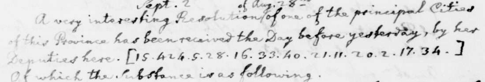
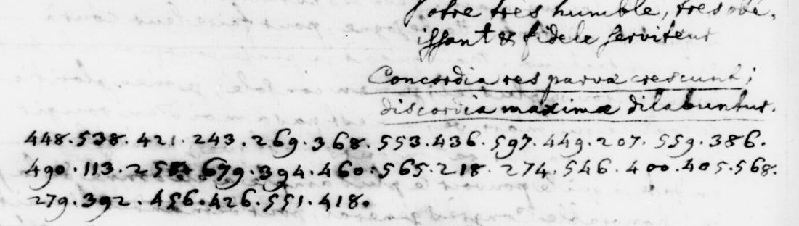

At a glanceKnown key applied · complete
- The letters
- C. W. F. Dumas, the American agent at The Hague, to the Committee of Secret Correspondence, the Committee for Foreign Affairs and the President of Congress, 30 April 1776 to 2 September 1781: 21 letters or enclosures with runs of numbers among clear French or English.
- Where
- US National Archives, Papers of the Continental Congress, item 93 vol. 1 (microfilm M247 roll 121), with duplicates in the Miscellaneous Papers (M332 roll 2). The images are free in the National Archives Catalog.
- The cipher
- Each number from 1 to 682 is the place of a character in 13 printed lines of Dumas’s 1775 preface to Vattel. Every occurrence of a letter is another number for it; stops, commas and apostrophes have numbers too.
- How it was deciphered
- With the key Dumas set out himself in 1776, whose text Satoshi Tomokiyo re-established. It was tested against the letters a decipherer of the time wrote over the numbers: 129 of 134 on a page chosen in advance.
- What it says
- Secret openings with regents of Amsterdam, a subscription for direct trade with America, a Prussian channel about Emden, the house of de Neufville. The bare postscript of 1781 reads
The city is Dort.
- Still open
- 20 of the 948 cipher words are holes: three blotted numbers and Dumas’s own slips and omissions, among them the conjectural “sont” of 14 June 1778. No person has checked a reading.
- Credit
- Contributed by Andrew Beling, with AI agents (14 November 2026). The key is Dumas’s. Most passages were deciphered at the time, and many are printed decoded by Sparks, Force, Wharton and the Papers of Benjamin Franklin.
01 The letters
C. W. F. Dumas was the agent of the American Congress at The Hague. He wrote to the Committee of Secret Correspondence in 1776 and 1777, to the Committee for Foreign Affairs from 1778, and in 1781 to the President of Congress. The letters are in clear French, a few in English, and where the matter was secret a run of numbers takes the place of the words: a name, a clause, sometimes whole paragraphs.
The letters are in the Papers of the Continental Congress, item 93 vol. 1 (503 images in the National Archives Catalog), with duplicates and copies in the Dumas file of the Miscellaneous Papers (M332 roll 2, 211 images). Every page of both was screened by two transcription passes, and every cipher run was transcribed twice, once forward and once backward. Volumes 2 to 4 of item 93 were screened on contact sheets only; no cipher was seen there, but the sheets are of low resolution.
Twenty-one letters or enclosures carry cipher: 4,503 number places in the principal copies and 2,401 more in other copies of the same letters. On most pages someone wrote letters over the numbers, in faint pencil in 1776 and in ink from 1777. The hand is not identified. Its letter forms are compatible with those of James Lovell’s own number table, which is not an identification.
| Date | Letter | Images | Numbers | Letters over the numbers | In print |
|---|---|---|---|---|---|
| 30 Apr 1776, with an unsigned letter of 6/9 May | first report; Extrait copy | 16–19, 23–24; copy 27–30 | 1,464; copy 1,372 | pencil, partial; copy full | decoded (Franklin Papers 22; Sparks; Wharton) |
| 14 May–6 June 1776 | B | 31–35 | 1,001 | partial | decoded (Franklin Papers 22) |
| 30 June–10 Aug 1776 | C, extract | 39, 41 | 168 | full | decoded (Sparks; Wharton) |
| 1 Sept–10 Oct 1776 | D and its Suite | 47, 51–53 | 116 | partial to full | decoded (Sparks; Wharton; Force for 52–53) |
| 12 Apr 1777 | E, extract | 55 | 79 | full | decoded (Sparks; Wharton) |
| 2 Aug 1777 | N | 81 | 63 | full | no |
| 14 Aug 1777 | extract of a letter to Franklin | 90; M332 3 | 100 + 100 | full; M332 mostly bare | content printed from the clear original (Franklin Papers 24) |
| 25 Sept 1777 | R | 108 | 32 | none | no |
| 14 Oct 1777 | S | 110 | 32 | none | letter printed, cipher sentence left out |
| 4 Nov 1777 | T, with an extract | 114–115; 117 | 134 + 134 | yes | no |
| 28 Nov 1777 | V, enclosure | 124–126 | 370 | yes | no |
| 24 Feb 1778 | B2 and duplicate C2 | 143–144; M332 9–10 | 346 + 346 | yes | no |
| 27 Apr 1778 | H2 and duplicate D2 | 154; M332 13 | 107 + 107 | yes | no |
| 14 June 1778 | N2 and copies M2 | 160; M332 20, 23 | 139 + 140 + 140 | yes; M332 23 bare | no |
| 27/31 July 1778 | list of names | 173 | 138 | yes | letters printed with blanks; the list not |
| 17 Aug 1778 | heading of a copied letter | 195, 201 | 25 and 28 | yes; partial | yes |
| May 1779, printed as 15 May | Q3/R3 | 242 | 108 | faint | first passage printed, the rest left out |
| [after 17 May] 1779 | S3/T3, English | 239 | 17 | none | no |
| 21 June 1779 | S3, English | 253 | 17 | none; the name in the margin | no |
| 20 Sept 1779 | N4 and duplicate Z3 | 260; M332 72 | 34 + 34 | partly; M332 bare | decoded (Wharton 3:333; Sparks) |
| 2 Sept 1781 | postscript to F6 | 493; plain copy 488–489 | 13 | none | letter printed, cipher sentence left out |
Image numbers are those of the National Archives Catalog for item 93 vol. 1; “M332” is the Dumas file of M332 roll 2. “In print” means the editions checked: Sparks vol. 9, Wharton vols. 2–4, Force, and the Papers of Benjamin Franklin for the letters named.
02 The key
Dumas set the system out himself, in his letter of 30 April 1776 to the Committee of Secret Correspondence. Each number is the place of a character in 13 printed lines of his own 1775 Amsterdam edition of Vattel, Le Droit des gens: the “Lettre de l’éditeur à Monsieur ***”, pages III to V, 682 characters from “Voulez-vous sentir la différence?” to “dans leur juste résistance.” He gave the last number of each line (57, 114, 168, 223, 278, 335, 394, 445, 499, 555, 612, 666, 682) and the rule “Tout a son nombre”: spaces are not counted; apostrophes, hyphens, commas, full stops, “&” and the reference mark are.
Accents are ignored in use, and every occurrence of a letter is another number for it: in the key file e, with its accented forms, has 129 numbers and s has 60. The text has no k and no w, so Dumas writes c for k (“cing of Prussia”, “Van Berchel”). He uses the hyphen as a dash or as an abbreviation mark (“F=” for France).

The city is Dort.Image: US National Archives, RG 360, Papers of the Continental Congress, item 93 vol. 1 (M247 roll 121), image 493 (folio 574), via catalog.archives.gov.
The key was not recovered here. Satoshi Tomokiyo re-established the 13 lines from the Committee’s enciphering table and showed the structure of the system (Cryptiana, 2008–09). The key file used here was built from the 1830 Paris reprint of the preface, adjusted to Dumas’s line totals and to Tomokiyo’s wording, and frozen before the second test below. It agrees with the 13 lines on Cryptiana’s page in 681 of 682 places. At 515 the page prints “suciombent” for “succombent”, a typing slip: 515 gives the c of “ici” in the letter of 14 June 1778, where the decipherer wrote c.
03 Testing the key
The key built from the printed text, without any of the decipherer’s letters, was set against the letters written over the numbers on one page chosen in advance (image 173, the list of names of July 1778). The plan was written before the run. The key gives the decipherer’s letter for 129 of 134 numbers (96.3%), and for 129 of 130 leaving out the letters the transcriber had marked uncertain. Two hundred keys with the same values shuffled give 7.1% on average and 14.9% at most. One reservation, stated in the plan: the reading agent had already decoded that page with this key.
An earlier test ran the other way. A key built only from the decipherer’s letters on three pages of 1778 (342 numbers) predicted his letters on a fourth: 106 of 108 after one transcription correction checked on the image, against 14.8% at most for 200 shuffled keys. It was not blind: one transcriber did both sides.
The statistical validation on the French letters (4,129 numbers) scores the decode at −2.008 per letter on a French model of the period, against −5.269 for random keys. A key fitted by annealing to the shuffled text reaches −3.482, but the annealer reaches only −3.528 on the real text, so that comparison is weak here. The decipherer’s letters are the stronger evidence.
The two transcription passes agreed on about 95% of the numbers before any image was checked; nearly all the rest were misalignments or blots, settled on enlarged crops. A second AI agent of the contributor rebuilt the key from Cryptiana, transcribed four passages on its own with the same numbers apart from one, and redid the print check; its corrections are applied. Before the folder was merged, a position table and a decoder written separately by the maintainers gave the same letters, and three of the passages that the editions leave out agreed number for number on the catalog images (108 numbers).
The key replay applies the key file to the 4,503 number places of the principal copies and compares the result with the deciphered text. 4,479 numbers give its letter exactly, and one more is a c written for k. Eighteen are emendations, each marked in the text; one is not deciphered; four have no key value (three blotted numbers, and a 698 where the key ends at 682).
04 The passages not in the editions checked
Ten passage groups, in thirteen letters, are not in the editions checked, or stand in letters that are printed with the cipher passage left out. Most of them carry the decipherer’s letters, so they were deciphered at the time: they are contemporary decipherments that were not printed. Two groups have no letter over any number on any copy: the sentence of 25 September 1777, repeated on 14 October, and the postscript of 2 September 1781. In the passages below the words written in cipher are in bold; a letter in square brackets is supplied or corrected from the sense.

- 2 August 1777 (N).
Depuis quelque temps le le courier du Bas-Rhin ne m’écrit plus … Je viens de faire de bonnes ouvertures pour des négociations secrètes avec des gens de la régence d’Amsterdam.
The Courier du Bas-Rhin no longer writes to him; he has made good openings for secret negotiations with people of the regency of Amsterdam. - 25 September 1777 (R), repeated on 14 October (S).
Le paquet, L, est dans le vaisseau pris.
His packet L was in the captured ship. In S the sentence follows the account of the Dutch ship taken in the Channel; Sparks and Wharton print S without it. - 4 November 1777 (T).
C’est votre serviteur, qui a fait insérer la pièce au Mercure, & publier la Lettre hollandoise, etc. J’ai toujours sur le corps ici toute la cabale ennemie. Mais je suis à vous.
It was Dumas who had the piece put into the Mercure and the Dutch letter published; he has the whole enemy cabal on his back. - 28 November 1777 (V), an enclosure headed “2d Extraits” of his correspondence with the Courier du Bas-Rhin. His correspondent will make a memorial of the project sur Embden,
que je ferai parvenir au Roi en main propre, par le moyen de personnes qui l’approchent tous les jours … Je sais qu’il a la plus forte envie de fonder une marine.
Dumas had learned thatMr. Lee étoit allé à Berlin
. American privateers should be freed’entrer à Embden
with their prizes, and if others blockade the port it will be for his correspondent’s side tovo[u]s saisir de Brême, d[e] Stade, &c. que vous ferez bien de garder
. By the places named (Emden, Berlin) the contributor takes the King for the King of Prussia; the cipher does not name him. - 24 February 1778 (B2, C2). He has found means to
me procurer les dépêches des ministres de la Rép dans les cours de l’Europe, & que j’en envoie les extraits régulièrement
to the Commissioners.Une maison hollandoise à Amst= a ouvert une souscriptio[n] de dix mille pièces, pour envoyer quatre vaisseaux, chargés de premières nécessités, négocier directement avec votre continent. Il y a déjà trois mille pièces de souscrites.
- 27 April 1778 (H2, D2). One more letter is expected from Paris,
pour frapper un grand coup
. If God blessesces mesure[s], qui sont bien concertées, je pourrai vous annoncer une bonne nouvelle le mois prochain
. - 14 June 1778 (N2, M2). His operations consist in this:
cimenter & fortifier le parti formé depuis un certain temps pour ruiner l’influence angloise ici, détacher cette République de vos ennemis, la concilier à vous & à vos amis. Amsterdam, Harlem, Dort & Delft [s]ont pour nous.
The last verb is a conjecture: the number gives n. - July 1778, the names left blank in the letters to Van Berckel.
Voici les noms laissés en blanc dans ces lettres: — le Pensionaire d’Amsterdam — La Haie — le Grand Pensionaire — Amsterdam — Leurs Hautes Puissances — E. F. van Berchel.
The letters are printed with blanks; most of the names can be guessed from the editors’ headings, so this adds little. - The de Neufville passages of 1779. In the letter of May 1779 (Q3/R3), after the printed passage on a cabal of Genevan and Swiss bankers:
Ce sont vos amis, là & ici, qui m’ont fait agir; leur voix unanime est, , — que J. de Neufville & fils mérit[e] seul — votre confiance à Amsterdam, que les précédents ont été de faux amis. On trompe l’ambassadeur de F=.
The preference is given as the friends’ unanimous voice, not as his own. The two English letters of [after 17 May] and 21 June 1779 name the house again:What I have had the honour to tell you in my Letters Q3, R3, May 17th, of J. de Neufville & fils must be so understood, that it not exceeds the mercantile line.
- 2 September 1781, postscript to F6.
The city is Dort.
It names the city whose resolution of 28 August on the French loan he goes on to report. Sparks and Wharton print the postscript without the sentence, and the plain copy in the same volume leaves it out.
One more unprinted phrase is in the Extrait copy of the letter of 30 April 1776 only: the writer of the unsigned note is notre homme de la Haie
.
What these passages add is the contributor’s inference, not a finding of the cipher work: they show Dumas’s covert dealings with regents and merchants of Amsterdam in 1777 and 1778, his use of the Cleves gazette as a channel to Berlin for a port open to American privateers, and his passing on of a strong recommendation of de Neufville in 1779. That the editors left the passages out because they were in cipher is not shown; Wharton says he omitted some letters “as without public importance”.
05 What the editions print
The other passages are in print, decoded. The Papers of Benjamin Franklin (vol. 22) print the letters of 30 April and 14 May 1776 in French with the cipher passages in brackets, from the decoding written between the lines. Sparks (vol. 9) and Wharton (vols. 2–4) print translations that include the decoded content of the letters they give. Force prints despatch D of 1776 with the numbers, a decipherment set over them and a translation.
- 30 April 1776: two corrections to the Franklin Papers text. The numbers give “ministre de France” where the edition has “fiance” (571 is r in both copies, and the decipherer wrote r), and “Les alliés” where it has “Des alliés” (70 is l by the key in both copies; the letter over it on the copy looks like d, so the slip was the decipherer’s and the editors followed him).
- 14 May 1776: the edition prints six words corrected without note where Dumas’s numbers give “leeu”, “parol”, “den”, “guorre”, “m’urir” and “franee”.
- Despatch C of 1776: the numbers spell “Hortelez”; the decipherer and the print have Hortalez.
- Despatch D of 1776: “le ministre même” and “Madam V. Loder”, Dumas’s forwarding address, as Force prints them.
- 14 August 1777: the content is printed from the clear letter to Franklin. The cipher extract names “l’ambassadeur de France à la Haie” where the clear letter has the cover name “le Facteur”.
- 20 September 1779: Wharton prints “Commodore Jones’ squadron”; the numbers as written spell “csmmodore jones e his squadron”.
The print check was repeated in part on 24 November 2026, on the Internet Archive texts of Sparks vol. 9 and Wharton vols. 2 and 3, by date and by keyword. Sparks prints the letters of 14 October 1777 and 15 May 1779 and the postscript of 2 September 1781 without their cipher sentences, and has no letter of 2 August, 25 September, 4 or 28 November 1777, of 24 February, 27 April or 14 June 1778, or of 21 June 1779; Wharton’s two volumes have no letter of those dates and none of the wording. These are searches of machine-read text, not a reading page by page. Cryptiana’s page gives the key and decodes none of the letters. The Franklin Papers were checked only for the letters named above and by a few searches of Founders Online, which refuses scripted access; the letters from Dumas to Franklin of 1777 to 1779 were not gone through, and neither were the Adams Papers.
06 How much is deciphered
The share is counted over the words written in cipher only, and a word counts when the key gives every letter of it for the numbers as transcribed. A word in which one letter had to be corrected or supplied from the sense is a hole, however certain the word. By that count 928 of the 948 cipher words are deciphered, and 20 are holes.
Two kinds of evidence beside the key are allowed to carry a letter, and each such letter is marked in the text files. Five words take one letter from another cipher copy of the same letter (Angleterre, qu’on and réconcilient on 30 April 1776, procurer on 24 February 1778, vos on 14 June 1778). Seven lean on what the decipherer wrote over a number. Six take a letter from him: Hortalez, simplement and puissance in the extract of despatch C, Bas-Rhin and fonder on 28 November 1777, and Prussia in despatch D of 1776. In d’Espagne, also in despatch C, his short stroke stands over a number that gives b where the apostrophe is wanted, and the number is dropped. Prussia stays a hole for its a; the other six count as read.
That matters for one text. The extract of despatch C has 32 cipher words; with the decipherer’s letters it has one hole, and by the key alone it would have five holes, more than the two the short-text floor allows, and would be deciphered in part. Three of the four places were looked at again on the image: his u stands over the number that gives d in “puissance”, his e over a blotted number in “simplement”, and a short stroke over the number that stands where the apostrophe of “d’Espagne” is wanted. The fourth, the a of Hortalez, is on a page that was not looked at again.
| Text | Cipher words | Holes | The holes |
|---|---|---|---|
| 30 Apr 1776 | 305 | 2 | e[t], d[e]: the letter is written in neither copy |
| 14 May 1776 (B) | 223 | 6 | l[i]eu, parol[e], de[s], gu[e]rre, m[o]urir, Fran[c]e |
| Despatch C, 1776 | 32 | 1 | char[g]é: the number is under a blot |
| Despatch D, 1776 | 22 | 1 | Prussi[a]: a blot, and a number that gives r |
| 12 Apr 1777 (E) | 19 | 1 | l’ab[b]é: the number is under a blot |
| 2 Aug 1777 (N) | 14 | 0 | |
| 14 Aug 1777 | 21 | 1 | l’[e]spouse: the e is not written |
| 25 Sept and 14 Oct 1777 | 16 | 0 | |
| 4 Nov 1777 (T) | 30 | 0 | |
| 28 Nov 1777 (V) | 87 | 2 | vo[u]s (the number gives e), d[e] Stade (it gives o) |
| 24 Feb 1778 | 64 | 1 | souscriptio[n]: the number gives u in both copies |
| 27 Apr 1778 | 21 | 1 | mesure[s]: the s is not written |
| 14 June 1778 | 26 | 1 | [s]ont: the number gives n in all three copies |
| July 1778, names | 26 | 0 | |
| 17 Aug 1778, heading | 8 | 0 | |
| 1779, de Neufville | 24 | 1 | mérit[e]: the numbers stop at mérit |
| 20 Sept 1779 | 6 | 2 | C[o]mmodore (the number gives s), and the “&” after Jones (it gives e) |
| 2 Sept 1781 | 4 | 0 |
Every text is at 95% or more of its cipher words, except two short ones: 12 April 1777 (18 of 19) and 20 September 1779 (4 of 6). They are counted as deciphered under the project’s floor for a text of fewer than 40 cipher words, which allows two holes. The counting tool splits a word at an apostrophe, so l’Angleterre is two words. The contributor’s own figure, 4,498 of 4,503 numbers, counted a number when its letter was restored with certainty; the stricter count above replaces it as the headline.
Grades: every letter the key gives for the number as written comes from the primary key (H). The letters taken from another cipher copy are the key’s values for that copy’s numbers (H); those taken from the decipherer’s letters over the numbers come from plain text beside the cipher (C). The letters in square brackets are inferred from the sense (I), except “[s]ont” and the “&” of 20 September 1779, which are uncertain (M).
07 What remains uncertain
- Three numbers are under blots (despatch C image 41, despatch D image 51, 12 April 1777 image 55); their letters, g, s and b, are supplied from the sense, and the s also from the decipherer.
- “Delft [s]ont pour nous”, 14 June 1778: the number is a clear 54 on the image and in all three copies, and 54 is n. “Sont” is a conjecture; as written, “Delft n’ont pour nous” does not make a sentence.
- The “&” after “Jones”, 20 September 1779, is a guess; “Jones e his squadron” with a stray e is as possible.
- The other holes are single letters in words whose sense is not in doubt. The numbers are clear and give another letter, or the letter is not written: Dumas’s own slips in enciphering.
- The hand that wrote the letters over the numbers is not identified.
- Whether the 1781 postscript is among the passages of Wharton’s volumes 4 and 5 that William Friedman’s papers list as without a decipherment in 1956 (catalogue entry 784) cannot be told here: that list was not seen. The other nine groups are of 1777 to 1779, outside those volumes.
- No person has checked a reading. The transcriptions, the decipherment and the checks were made by AI agents: the contributor’s, and on 24 November 2026 the maintainers’, which recounted the share, replayed the key, looked at six of the pages and read the texts as sentences.
Full texts
The transcription and the decryption of every document on this page, so that the reading can be used and checked. Short files are shown here; all are in the repository.
30 April 1776 and the copied unsigned letter of 6/9 May (in print)
Dumas reports opening himself to a French minister at The Hague, the request for French mediation or a Bourbon alliance, and the minister's fear that reconciled colonies would turn on their helpers. Printed decoded in the Franklin Papers 22:403-412.
Transcription
# Dumas key-text cipher, document 1776-04-30 (principal copy). Reconciled numbers from the two passes, checked on the image where they disagreed.
# Source: readings/*.md, section "Numbers". Images: PCC item 93 vol. 1 = imgNNNN (NARA 502964761); M332 roll 2 = m332_NNNN (NARA 464815090).
# "#" = a number lost or blotted; "N*" = number kept as written but emended in the reading; {..} = plain words inside a run.
# image img0016
L13: 19 14 104 4 2 16 11 24 28 5 18 37 13 12 20 26
L14: 39 115 9 3 17 44 29 10 25 50 60 24 32 27 51 35 58 80 42 21
L15: 87 74 38 54 15 41 56 71 48 63 33 69 1 55 124 37 75 136 67
L16: 45 78 84 183 120 63 104 47 55 57 59 78 91 62 {Loin de vous}
L17: 90 72 181 94 81 107 53 119 207 {elles vous} 93 147 227 134
L18: 103 22 141 82 157 105 150 89 86 57 {à leurs} 159 100 61 108
L19: 173 111 142 133 {ou à leur} 172 114 81 119 83 70 116 175
L20: 85 73 88 162 77 177 269 96 66 8 131 106 101
L21: 207 227 281 122 189 64 220 155 23
L22: 200 158 128 423 135 241 233 506 144 190 186 178 238 139
L23: 153 272
L23: 211 140 40 141 160 36
L24: 301 150 118 204 164 215 241 675 679 659 681 651 673 661
L25: 635 678 627 677 676 633 671 663 281 660 627 625 663 664
L26: 642 658 666 637 698 {dont} 623 183 649 602 610 618 76
L27: 636 651 631 615 609 594 614 599 591 624 202 593
L28: 592 601 616 577 235 621 605 617 589
L29: 585 586 564 606 592 574 570 563 567
L30: 235 551 520 546 560 555 575 604 539 598 600 571 570
L31: 510 515 595
L31: 564 562 531 493
L32: 588 517 529 582 479 581 530 597 241 481 497 490 495
L33: 496 494 464 489 453 487 491 471 406 446 486
L34: 399 388 389
L35: 398 397 390 391 394 373 387 384 377 385 346 392
L36: 371 362 342 338 386 358 376 393 374
L37: 325 350 382 349 353 316 367 395 355 341
L38: 329 439 365 401
L38: 269 293 292 273
L39: 281 279 271 292 277 290 274 257 288 255 252 282 287 250
L40: 254 203 215 284 285 265 272
L40: 246 263 235 258
L41: 237 549 245 261 231 504 239 247 {les} 218 219 240 214 283
# image img0017
L01: 193 178 166 191 196 139
L01: 195 192 197 198
L02: 162 161 580 183 169
L02: 199 158 159 142 170 139
L03: 180 152 150 199 600 141 136 132 154 97 167
L04: 93 89 49 99 96 91 90 80 74 94 86 60 67 81
L05: 78 65 50 66 97
L05: 49 50 73 9 68 53 82 87
L06: 5 4 18 13 11 12 26 17 24 28 2 14 49 16 37
L07: 21 29 15
L07: 32 47 70 35 39 44 35 25 77
L08: 3 27 53 46 9 51 33 19 1 38 49 41 42 43 115 50 54 34
L09: 65 55
L09: 120 10 107 147 101 59 115
L10: 105 106 107 109 62 110
L10: 126 72
L11: 112 124 424 103 82 100 101 113 89 146 147 199 155 118
L12: 154 108 194
L14: 172 125 109 119 161 111 132 134
L15: 143 158 102 141 157 182 169 220 150 163 114 165 142
L16: 92 185 127 132 173 182 178 80 170 116 70 73 122
L17: 186 131 170 187 233 234 242
L18: 135 197 200 243 211 215 210 200 144 204
L19: 312 300 301 302 104 320 304 305
L20: 264 319 311 306 324 307 333 310 334 331 335 303 330
L21: 313 314 395 341 338 343 317 337 354 339
L22: 378 355 360 387 124 424 326 364 136
L23: 328 358 389 347 361 353 363 356 382 221 249
L24: 634
L25: 430 400 440 423 403 404 411
L26: 448 407 405 439 409 449 416 406 431 413 418
L27: 30
L28: 460 419 412 435 474 427 425 429 426 471 510 439
L29: 428 402 473 458 444 432 516 507 490
L29: 408 471
L30: 437 613 410 420 527 520 546 436 167 241 488 529
L31: 476 567 570 582 546 498 551 490 478 492 573
L32: 582 495 502 503 421 523 509 511 547 512 576
L33: 517 537 539 577 593 521 601 542 599 519 602 600
L34: 614 536 533 505 566 603 535 456 538 513 459 466
L35: 553 522 545 541 651 569 615 528 590 525 548 241
L36: 580 249 627 619 625 559 571 524 661 565 575 217
L37: 446 556 679 453 655 481 675 660 555 16 562 14 549
L38: 532 21 501 565 540 578 514 585 27 530 568 592 544
L39: 678 574 583 610 543 616 579 531 508 581 550 596
L40: 560 526 53 572 588 608 639 201 589 539 640 51 642
L41: 66 534 594 31 652 554 79 609 654 2 98 595 54 670 19
L42: 557 60 69 618 75 552 85 56 677
# image img0018
L01: 629 598 515 9 63 591 103 558 141 120 15 150
L02: 50 68 86 604 172 563 159 650 653 606 147 564 67
L03: 162 637 587 174 617 586 584
L03: 100 155 33 191
L04: 94 128 654 662 99 607 76 203 669 621 674 158 605
L05: 169 202 178 250 676 105 138 633 624 118 125 611
L06: 666 163 127 139 620 131 631 635 672 137 271 630 193
L07: 34 234 622 28 636 185 52 644 17 623 506 243 643
L08: 657 302 258 229 647 658 659 664 11 648 140 663
L09: 149 251 323 671 12 274 1 681 680 4 5
L10: 656 626 254 628 22 330 49 13 20 74 641 311
L11: 115 184 235 287 26 25 124 29 338 371 373 32
L12: 314 39 35 30
L13: 71 183 192 23 199 46 353 65 279 44
L14: 196 329 31 38 646 342 41 78 209 362 37 341 104
L15: 47 213 384 91 48 84 55 107 59 377 113 119 62 18 378
L16: 186 387 431 43 430 665 151 58 668 273 72 57 87
L17: 152 82 90 440 3 61 134 89 93 124 219 420 488
L18: 108 471 10 171 101 474 111 388 110 30
L19: 70 281
L20: 424 228 143 157 507 118 73 114 238 42 116 165 173
L21: 122 80 45 546 112 506 135 406 117 81 551 8 187 236
L22: 573 64 144 510 153 96 200 253 295 160 194
L25: 527 88 529 395 204 570 520 136 164 244 176 567
L26: 180 298 576 123 95 593 577 129 133 188 216 175 106 163
L27: 667 109 476 132 205 224 126 222 177 181 276 146 297 582
L28: 601 225 189 401
L28: 190 614
L29: 227 319 170 231
L32: 154 619
L33: 429 237 660 599 252 232 309 322 197 246 102 349
L34: 210 198 268 241 161 74 240 602 561 678 625 247 285
L35: 19 97 352 182 217 294 256 296 597 69 485 75 121 403
L36: 299 615 211 261 305 498 286 517 263 215 409 214 312
L37: 528 85 655 627 220 265 335 339 282 255 416 239 324 340
# image img0019
L01: 269 245 288 130 435 344 148 120 675 357 366 290 147 266
L02: 267 318 292 270 156 300 661 142 166 16 331 304 354 262
L03: 307 600 355 155 679 264 310 207 289 183 313 375 332
L04: 158 104 14 317 241 316 326 379 21 233 328 380 634
L06: 242 347 336 260 270 385
L07: 259 356 386 473 53 27 268 423 516 528 580 359 66 51
L08: 238 24 54 79 365 277 360 394 272 169 364 76 367 400
L09: 308 202 293 56 98 221 103 523 63 405 638
L15: 235 178 418 320 382 374 230 77 345
L16: 504 334 376 31 381 63 391 442 542 141 455 348 545
L17: 150 68 248 446 556 86 100 337 408 562 350 393
L18: 372 284 396 397 439 613 234 398 476 92 325 399
L19: 179 585 462 243 199 22 258 159 411 407 470 682
# image img0023
L29: 4 19 22 2 16 17 5 20 13 18 69
L30: 424 75 21 26
# image img0024
L01: 31 29 11 32 25 85 53 120 1 9 12 50 46 71 65 35
L02: 39 34 67 3 44 37 38 87 273 94 10 78 58 147 76 66
L03: 84 79 207 99 42 60 47 45 15 105 33 268
L06: 172 613 98 70 125
L07: 87 127 185 424 41 91 80 81 48 73 269 96 55 90 202
L08: 131 235 59 14 93 101 106 107 262 62 110
L09: 137 118 667 72 57 112 504 109 82 27 140 132
L10: 117 178 8 149 51 123 152 24 273 155 52 119
L11: 158 103 61 77 129 83 133 74 141 88 287 89 134
L12: 108 175 64 111 186 114 170 113 28 424 184
L13: 177 116 189 169 102 192 197 190 244 150 143 122
L14: 272Transcription
# Dumas key-text cipher, document 1776-04-30 (other copies). Reconciled numbers from the two passes, checked on the image where they disagreed.
# Source: readings/*.md, section "Numbers". Images: PCC item 93 vol. 1 = imgNNNN (NARA 502964761); M332 roll 2 = m332_NNNN (NARA 464815090).
# "#" = a number lost or blotted; "N*" = number kept as written but emended in the reading; {..} = plain words inside a run.
# image img0027
L08: 70 116 175 85 73 88 162 77 177 269
L09: 96 66 8 131 106 101
L10: 220 155 23 200 158 128 423 135 241 233 506 144 190
L11: 186 178 238 139 153 272
L11: 211 140
L12: 40 141 160 36 301 150 118 204 164 215 241 675 679 659 681
L13: 651 673 661 635 678 627 677 676 633 671 663 281 660 627
L14: 625 663 664 642 658 666 637 658
L14: 623 183 649
L15: 602 610 618 76 636 651 631 615 609 594 614 599 591
L16: 624 202 593 592 601 616 577 235 621 605 617 589
L17: 585 586 564 606 592 574 570
L18: 563 567 235 551 520 546 560 555 575 604 539 598 600 571
L19: 570 510 515 595
L19: 564 562 531 493
L20: 588 517 529 582 479 581 530 597 241 481 497 490 495 496 494
L21: 464 489 453 487 491 471 406 446 486
L22: 399 388 389 398 397 390 391 394
L23: 373 387 384 377 385 346 392 371 362 342 338 386 358
L24: 376 393 374
L24: 325 350 382 349 353 316 367
L25: 395 355 341 329 439 365 401
L25: 269 293
L26: 292 273 281 279 271 292 277 290 274 257 288 255 252 282
L27: 287 250 254 203 215 284 285 265 272
L27: 246 263
L28: 235 258 237 549 245 261 231 504 239 247
L28: 218 219 240 214
L29: 283
L29: 193 178 166 191 196 139
L29: 195 192 197 198
L30: 83 162 161 580 183 169
L30: 199 158 159 142 170 139
L31: 180 152 150 199 600 141 136 132 154 97 167
L31: 93 89 49
L32: 99 96 91 90 80 81 74 94 86 60 67 81 78 65 50 66 97
L33: 49 50 73 9 68 53 82 87
L34: 5 4 18 13 11 12 26 17 24 28 2 14 49 16 37 21 29 14 15
L35: 32 47 70 35 39 44 35 25 77 3 27 53 46 9 51 33 19 1
L36: 38 49 41 42 43 115 50 54 34 62 110
L36: 126
L37: 72 112 124 424 103 82 100 101 113 89 146 147 199 155 118 154 108
L38: 194
M: 65 55
M: 120 10 107 147 101 59 115 105 106 107 109
# image img0028
L01: 172 125 109
L02: 119 161 111 132 134 143 158 102 141 157 182 169 220 150 163 114
L03: 165 142 92 185 127 132 173 182 178 80 170 116 70 73 122
L04: 186 131 170 187 233 234 242
L05: 135 197 200 243 211 215 210 200 144 204
L06: 312 300 301 302 104 320 304 305
L07: 264 319 311 306 324 307 333 310 334 331 335 303 330
L08: 313 314 395 341 338 343 317 337 354 339
L09: 378 355 360 387 124 424 326 364 136
L10: 328 358 389 347 361 353 363 356 382 221 249 634
L12: 430 400 440 423 403 404 411
L12: 448 407
L13: 405 439 409 449 416 406 431 413 418 30
L14: 460 419 412 435 474
L15: 427 425 429 426 471 510 439 428 402 473 458 444 432
L16: 516 507 490
L16: 408 471 437 613 410 420 527 520 546
L17: 436 167 241 488 529 476 567 570 582 546 498 551
L18: 490 478 492 573 582 495 502 503 421 523 509 511 547
L19: 512 576 517 537 539 577 593 521 601 542 599 519 602 600
L20: 614 536 533 505 566 603 535 456 538 513 459 466 553
L21: 522 545 541 651 569 615 528 590 525 548 241 580 249
L22: 627 619 625 559 571 524 661 565 575 217 446 556 679
L23: 453 655 481 675 660 555 16 562 14 549 532 21 501 565
L24: 540 578 514 585 27 530 568 592 544 678 574 583 610 543
L25: 616 579 531 508 581 550 596 560 526 53 572 588 608
L26: 639 201 589 539 640 51 642 66 534 594 31 652 554 79
L27: 609 645 2 91 595 54 670 19 557 60 69 618 75 552 85
L28: 56 677
L28: 629 598 515 9 63
L29: 591 103 558 141 120 15 150 50 68 86 604 172 563 159 650 653 606
L30: 147 564 67 162 637 587 174 617 586 584
L30: 100 155 33
L31: 191 94 128 654 662 99 607 76 203 669 621 674 158 605 169
L32: 202 178 250 676 105 138 633 624 118 125 611 666 163 127
L33: 139 620 131 631 635 672 137 271 630 193 34 234 622 28
L34: 636 185 52 644 17 623 506 243 643 657 302 258 229
L35: 647 658 659 664 11 648 140 663 149 251 323 671 12 274
L36: 1 681 680 4 5 656 626 254 628 22 330 49 13 20 74 641
L37: 311 115 184 235 287 26 25 124 29 338 371 373 32 314 39 35
L38: 30
# image img0029
L01: 71 183
L02: 192 23 199 46 353 65 279 44 196 329 31 38 646 342 41 #
L03: 209 362 37 341 104 47 213 384 91 48 84 55 107 59 377 #
L04: 119 62 18 378 186 387 431 43 430 665 151 58 668 273 #
L05: 57 87 152 82 90 440 3 61 134 89 93 124 219 420 488 #
L06: 471 10 171 101 474 111 388 110
L07: 70 281 424 228 143 157 507 118 73 114
L08: 238 42 116 165 173 122 80 45 546 112 506 135 406 117 81 #
L09: 8 187 236 573 64 144 510 153 96 200 253 295 160 194
L11: 527 88 529 395 204 #
L12: 520 136 164 244 176 567 180 298 576 123 95 593 577 129 #
L13: 188 216 175 106 163 667 109 476 132 205 224 126 222 #
L14: 181 276 146 297 582 601 225 189 401
L15: 190 614 227 319 170 231
L18: 154 619 429 237 660 599 252 232 309 322 197 246 #
L19: 349 210 198 268 241 161 74 240 602 561 678 625 247 #
L20: 19 97 352 182 217 294 256 296 597 69 485 75 121 403 #
L21: 615 211 261 305 498 286 517 263 205 409 214 312 528 #
L22: 655 627 220 265 335 339 282 255 416 239 324 340 269
L23: 245 288 130 435 344 148 120 675 357 366 290 147 266 #
L24: 318 292 270 156 300 661 142 166 16 331 304 354 262 #
L25: 600 355 155 679 264 310 207 289 183 313 375 322 #
L26: 104 14 317 241 316 326 379 21 233 328 380 634
L28: 242 347 336 260 270 385 259 #
L29: 386 473 53 27 268 423 516 528 580 359 66 51 238 24
L30: 54 79 365 277 360 394 272 169 364 76 367 400 308 202
L31: 293 56 98 221 103 523 63 405 638
L36: 235 178 418 #
L37: 382 374 230 77 345 504 334 376 31 381 63 391 442 542 141 #
# image img0030
L01: 348 545 150 68 248 446 556 86 100 337 408 562 350 393
L02: 372 284 396 397 439 613 234 398 476 92 325 399 179
L03: 585 462 243 199 22 258 159 411 407 470 682
L17: 54 196 97 157 135 424 209 371 373 144 262 153 88 178
L18: 613 234 159 160
L19: 4 19 22 2
L20: 16 17 5 20 13 18 69 427 75 21 26
L21: 3 29 11 32 25 85 53
L22: 120 1 9 12 90 46 71 65 35 39 34 67 3 44 37 38 87 273 94 10 78 58 147
L23: 76 66 84 79 207 99 42 60 47 45 105 33 268
L25: 172 613 98 70 125 87 127 185 424
L26: 41 91 80 81 48 73 269 96 55 90 202 131 235 59 14 93 101 106 107 262
L27: 62 110 137 118 667 72 57 112 504 109 82 27 140 132 117 178 8 149 51
L28: 123 152 24 273 155 52 119 158 103 61 77 129 83 133 74 141 88 287 89
L29: 134 108 175 64 111 186 114 170 113 28 424 184 177 116 189 169 102 192
L30: 197 190 244 150 143 122 272Decryption
1776-04-30_letter-and-extrait_decode.txt
# Raw decode with the frozen key (key/key_positions.json): one letter per number, accents dropped, no word division.
# Section "Raw decode" of readings/1776-04-30_letter-and-extrait.md. "=" is the key's hyphen (Dumas uses it as a dash), "#" an illegible number.
# img0016 run 1
angloisecellesdescourseuropeennesquis'entendentaveclacourd'angleterre {Loin de vous} secourir, {elles vous} sacrifieroient {à leurs} interets {ou à leur} peur.lesalliesquivous
# img0016 run 2
,c'estlafrance&l'espagne,
# img0016 run 3
soyiezlibres&independantsdel'angleterr[698] {dont} l'enormepuissancemaritimeles
# img0016 run 4
ouvertaunministredefrance
# img0016 run 5
vosdemandes,&lettredecreance
# img0016 run 6
entrelesmainsduministere
# img0016 run 7
duroidefrance.
# img0016 run 8
quej'aieueavecceministre,
# img0016 run 9
remarquerque {les} voeux
# img0017 run 1
nation
# img0017 run 2
vousilm'a
# img0017 run 3
faitunedifficulte
# img0017 run 4
secoursq'onpourroit
# img0017 run 5
colonies
# img0017 run 6
ellessereconciliet
# img0017 run 7
ellessereunirontaveceuxcontre
# img0017 run 8
aurasecourues
# img0017 run 9
leschiensdelafable.
# img0017 run 10
pourleurravirlalibertepourlaquelle
# img0017 run 11
pourlaleurassurer
# img0017 run 12
seliguercontreleursbienfaiteurs
# img0017 run 13
arrachercetteliberte.
# img0017 run 14
asacour
# img0017 run 15
lescolonies?
# img0017 run 16
leroidefrancevoudroit
# img0017 run 17
parhumanite&magnanimite,interposersamediationenfaveurdepeuplesopprimes,&menagerunereconciliationquileurconservattoutesleurslibertesdontilsjouissoientauparavant
# img0018 run 1
reconciliationnepuisseavoirlieu,
# img0018 run 2
nationssoumisesalamaisondebourbonvoudroientaccepterl'alliancedescoloniesaveclebeneficed'uncommerceimmense?
# img0018 run 3
d'offrirasonjeuneroilagloirederendrelapaixauxsujetsdesautrescommeauxsiens?
# img0018 run 4
l'horribleguerrequis'ensuivroiteneurope.
# img0018 run 5
alafrancedenepaslaissersubjuguerlescolonies.
# img0018 run 6
sacour
# img0018 run 7
lafrancepourvous,&l'engageratolerer,afavorisermemesousmainlessecours
# img0019 run 1
quevosvaisseauxpeuventtirerdefrance,d'espagne&desiles.
# img0019 run 2
leplusbesoin,commeingenieurs,armes,munitions.
# img0019 run 3
masurete,quejenesoispointconnupouretrechargedevosaffaires.
# img0023 run 1
lafoiredelahaie
# img0024 run 1
jeseraiavosordrestouslesjoursamidi,ouplutot,
# img0024 run 2
philosopherquelquesmomenssurdesobjetsquenousavonsdejatraites.s'ilmerestepeudchosesavousdire,
# img0027 run 1
lesalliesquivous
# img0027 run 2
lafrance&l'espagne,
# img0027 run 3
soyiezlibres&independantsdel'angleterre
# img0027 run 4
l'enormepuissancemaritimeles
# img0027 run 5
ouvertaunministredefrance
# img0027 run 6
vosdemandes,&lettredecreance
# img0027 run 7
entrelesmainsduministere
# img0027 run 8
duroidefrance.
# img0027 run 9
quej'aieueavecceministre,
# img0027 run 10
remarquerque
# img0027 run 11
voeux
# img0027 run 12
nation
# img0027 run 13
vous.ilm'a
# img0027 run 14
faitunedifficulte
# img0027 run 15
secoursqu'onpourroit
# img0027 run 16
colonies
# img0027 run 17
ellessereconcilient
# img0027 run 18
ellessereunirontaveceuxcontes
# img0027 run 19
leschiensdelafable.
# img0027 run 20 (left margin, written vertically bottom-to-top, marked "+"; probably the insertion for the struck passage on L33)
re
# img0027 run 21 (left margin, continued)
aurasecouru
# img0028 run 1
pourleurravirlalibertepourlaquelle
# img0028 run 2
pourlaleurassurer
# img0028 run 3
seliguercontreleursbienfaiteurs
# img0028 run 4
arrachercetteliberte.
# img0028 run 5
asacour
# img0028 run 6
lescolonies?
# img0028 run 7
leroidefrancevoudroit
# img0028 run 8
parhumanite&magnanimite,interposersamediationenfaveurdepeuplesopprimes,&menagerunereconciliationquileurconservattoutesleurslibertesdontilsjouissorentauparavant
# img0028 run 9
reconciliationnepuisseavoirlieu,
# img0028 run 10
nationssoumisesalamaisondebourbonvoudroientaccepterl'alliancedescoloniesaveclebeneficed'uncommerceimmense?
# img0029 run 1
d'offrirasonjeune#oilagloirederen#relapaixauxsuj#tsdesautrescomm#auxsiens
# img0029 run 2
l'horribleguerrequis'ensu#vroiteneurope.
# img0029 run 3
alafr#ncedenepaslais#ersubjuguerle#colonies.
# img0029 run 4
sacour
# img0029 run 5
lafrancepour#ous,&l'engage#atolerer,afavo#isermemeeousm#inlessecoursquevosvaisseau#peuventtirerd#france,d'eso#gne&desiles.
# img0029 run 6
leplusb#soin,commeingenieurs,armes,munitions.
# img0029 run 7
mas#rete,quejenesoi#
# img0030 run 1
pointconnupouretrechargedevosaffaires.
# img0030 run 2
notrehommedelahaie
# img0030 run 3 (quoted letter; SMALL numbers 1-120 dominate here)
lafoiredeladaie
# img0030 run 4
ueseraiavossrdrestouslesjoursamidi,oupluot,
# img0030 run 5
philosopherquelquesmomenssurdesobjetsquenousavonsdejatraites.s'ilmerestepeudchosesavousdire,Reading
1776-04-30_letter-and-extrait_text.txt
Conventions: words written in cipher stand between ⟦ and ⟧; the clear words of the letter around them (from the transcribers' context notes and the images) are outside. Inside a cipher passage, {+x} is a letter that the number in the principal copy does not give but another cipher copy of the same letter, or the contemporary decipherer's letter written over the number, does: the word counts as read. {-x} is a letter or sign the numbers give and the reading drops. [x] is a letter corrected or supplied by sense alone: the word counts as a hole on the read bar. Most stops, commas, dashes and & inside ⟦ ⟧ are cipher signs too (the key text has numbers for them); a few stops, commas, apostrophes and hyphens are added for reading, and the raw decode (the _decode file) shows exactly which. A plain ... outside ⟦ ⟧ marks clear text left out of the excerpt, not an unread word. Spelling is Dumas's; accents, capitals and word division are added. Until 24 Nov 2026 this file marked the cipher passages with square brackets and emended letters with round ones.
## Reading
30 April 1776 (image 16 onward): "... & qu'il faut excepter de ce nombre les Rentiers intéressés dans les fonds publics ⟦anglois, e[t] celles des cours européennes qui s'entendent avec la cour d'Angleterre⟧. Loin de vous ⟦secourir⟧, elles vous ⟦sacrifieroient⟧ à leurs ⟦intérêts⟧ ou à leur ⟦peur. Les alliés qui vous⟧ conviennent dans cette conjoncture⟦, c'est la France & l'Espagne,⟧ car leur intérêt est que vous ⟦soyiez libres & indépendants de l'Angleterr{+e}⟧ dont ⟦l'énorme puissance maritime les⟧ inquiète. Je me suis donc ⟦ouvert à un ministre de France,⟧ & la copie & traduction de ⟦vos demandes & lettre de créance⟧ à mon sujet sont depuis quinze jours au moins ⟦entre les mains du ministère⟧ & par conséquent ⟦du roi de France.⟧ Dans la conversation ⟦que j'ai eue avec ce ministre,⟧ j'ai bien pu ⟦remarquer que⟧ les ⟦voeux⟧ de sa ⟦nation⟧ sont pour ⟦vous. Il m'a⟧ seulement ⟦fait une difficulté⟧ contre les ⟦secours q{+u}'on pourroit⟧ donner aux ⟦colonies⟧; c'est que, si ⟦elles se réconcilie{+n}t⟧ avec les Anglois, ⟦elles se réuniront avec eux contre⟧ la puissance qui les ⟦aura secourues⟧ & imiteroient ainsi ⟦les chiens de la fable.⟧ Je n'avois rien de bon à répliquer, sinon que s'agissant d'êtres raisonnables, s'ils voyoient qu'on ne venoit pas ⟦pour leur ravir la liberté pour laquelle⟧ ils se battoient, mais plutôt ⟦pour la leur assurer⟧, ils ne seroient pas assez méchants pour ⟦se liguer contre leurs bienfaiteurs⟧ avec ceux qui vouloient leur ⟦arracher cette liberté.⟧ Enfin il a voulu savoir de moi positivement ce que je demandois ⟦à sa cour⟧ pour ⟦les colonies?⟧ Je lui ai répondu que vous desiriez de savoir, Primo: si ⟦le roi de France voudroit⟧ bien, ⟦par humanité & magnanimité, interposer sa médiation en faveur de peuples opprimés, & ménager une réconciliation qui leur conservât toutes leurs libertés dont ils jouissoient auparavant.⟧ Secundo, au cas qu'une telle ⟦réconciliation ne puisse avoir lieu,⟧ si les ⟦nations soumises à la maison de Bourbon voudroient accepter l'alliance des colonies avec le bénéfice d'un commerce immense?⟧ Il goûta beaucoup la première de ces propositions, ⟦d'offrir à son jeune roi la gloire de rendre la paix aux sujets des autres comme aux siens?⟧ L'autre proposition ne lui déplaisoit pas non plus, sans ⟦l'horrible guerre qui s'ensuivroit en Europe.⟧ Je lui remis donc, avec l'Extrait de votre Lettre, un petit Mémoire, où j'insinue combien il importe ⟦à la France de ne pas laisser subjuguer les colonies.⟧ Le tout a été envoyé à ⟦sa cour⟧ il y a quinze jours environ; ... & qu'elle ne peut que bien disposer ⟦la France pour vous, & l'engager à tolérer, à favoriser même sous main les secours que vos vaisseaux peuvent tirer de France, d'Espagne & des îles.⟧ Voilà pourquoi j'ai copié exactement, dans l'Extrait, ce que vous me marquez avoir ⟦le plus besoin, comme ingénieurs, armes, munitions.⟧ Tout cela je l'ai exécuté avec le plus profond secret, ... c'est aussi le meilleur pour votre service & pour ⟦ma sûreté, que je ne sois point connu pour être chargé de vos affaires.⟧"
9 May 1776, the unsigned letter Dumas copied (images 23-24; second copy on image 30): "Vous serez peut-être tenté, Monsieur, de venir voir ⟦la foire de la Haie⟧; j'aurai l'honneur de vous y renouveller les sentimens d'une sincère estime. ⟦Je serai à vos ordres tous les jours à midi, ou plutôt,⟧ si vous voulez bien m'écrire un mot de votre logement pour me faire savoir l'heure qui vous sera la plus comode. Nous pourrons ⟦philosopher quelques momens sur des objets que nous avons déjà traités. S'il me reste peu d[e] choses à vous dire,⟧ ce sera avec une vérité & une candeur que je me flatte que vous approuverez."
Copy only (image 30): "Enfin ma Lettre finissoit par vous communiquer la lettre que j'avois reçue le 9e May de ⟦notre homme de la Haie⟧ datée du 6e May. En voici une seconde copie."
## Notes
Text of the letter (images 16-19, 23-24); the Extrait copy (images 27-30) differs only where noted. The paragraph "Copy only" is in the Extrait copy alone (image 30).
Letters taken from the Extrait copy: Angleterr{+e} (image 16 L26: the letter has 698, which is out of range; the copy, image 27 L14, has 658 = e); q{+u}'on (the letter has no number for the u; the copy has 81 = u); réconcilie{+n}t (the letter has 21 29 15 = i e t; the copy has 21 29 14 15 = i e n t).
Holes, 2: e[t] (no number for the t in either copy; the Franklin Papers print "et") and d[e] (image 24 L12: 113, a struck number, 28; the e is written in neither copy).Translation
1776-04-30_letter-and-extrait_en.txt
"... and that one must except from this number the holders of English public funds, and those European courts that have an understanding with the court of England. Far from helping you, they would sacrifice you to their interests or to their fear. The allies who suit you in this situation are France and Spain, for it is in their interest that you be free and independent of England, whose enormous sea power alarms them. I have therefore opened myself to a minister of France, and the copy and translation of your requests and of the letter of credence concerning me have been for at least a fortnight in the hands of the ministry, and so of the King of France. In my conversation with this minister I was able to see that the wishes of his nation are for you. He raised only one difficulty against the help that might be given to the colonies: that if they were reconciled with the English they would join with them against the power that had helped them, and so imitate the dogs in the fable. I had no good answer except that, rational beings being concerned, if they saw that one came not to rob them of the liberty for which they were fighting but rather to secure it to them, they would not be wicked enough to league against their benefactors with those who wished to tear that liberty from them. At last he wished to know from me exactly what I was asking of his court for the colonies. I answered that you wished to know, first, whether the King of France would be willing, from humanity and magnanimity, to interpose his mediation in favour of oppressed peoples and bring about a reconciliation that would keep for them all the liberties they enjoyed before; second, in case such a reconciliation cannot take place, whether the nations subject to the House of Bourbon would accept the alliance of the colonies with the benefit of an immense commerce. He much liked the first of these proposals, to offer his young king the glory of giving peace to the subjects of others as to his own. The other did not displease him either, were it not for the horrible war that would follow in Europe. So I gave him, with the extract of your letter, a short memorandum suggesting how much it matters to France not to let the colonies be subjugated. The whole was sent to his court about a fortnight ago; ... and it can only dispose France well towards you and lead her to tolerate, even to favour secretly, the supplies your ships can draw from France, Spain and the islands. That is why I copied exactly, in the extract, what you tell me you most need, such as engineers, arms, munitions. All this I have done in the deepest secrecy ... it is also best for your service and for my safety that I not be known as the man in charge of your affairs." 9 May (unsigned letter): "You may be tempted, Sir, to come and see the fair at The Hague; I shall have the honour of renewing there the sentiments of a sincere esteem. I shall be at your orders every day at noon, or earlier, if you will write me a word from your lodging to tell me the hour that suits you best. We can philosophize for a few moments on subjects we have already treated. If I have little left to tell you, it will be with a truth and candour that I flatter myself you will approve." Copy only: "the letter I had received on 9 May from our man at The Hague, dated 6 May."
Despatch B, 14 May-6 June 1776 (in print)
The French minister's answer of 21 May 1776: no mediation while the colonies are the King of England's subjects and no alliance while France is at peace, but Americans may buy arms and munitions in France as merchandise; Hortalez will apply to the Committee. Printed decoded in the Franklin Papers 22:433-436.
Transcription
# Dumas key-text cipher, document 1776-05-14 (principal copy). Reconciled numbers from the two passes, checked on the image where they disagreed.
# Source: readings/*.md, section "Numbers". Images: PCC item 93 vol. 1 = imgNNNN (NARA 502964761); M332 roll 2 = m332_NNNN (NARA 464815090).
# "#" = a number lost or blotted; "N*" = number kept as written but emended in the reading; {..} = plain words inside a run.
# image img0031
L26: 198 210 165 95 183 213 23 199 173 164 289
L27: 176 211 395 187 243 162 278 316 258 56 215 142 219
L28: 214 312 126 180 335 49 274 339 228 239 121 236 340
L29: 163 253 63 166 167 344 420 188 357 205 200 276 174
L30: 222 68 221 245 230 191 146 225 366 30 115 274 204
L31: 266 86 424 297 488 498 232 248 240 154 549 270 247
L32: 130 319 277 375 308 295 279 216 379 256 380 124 322
L33: 100 128 349 203 385 394 341 138 136 261 386 345
L34: 139 281 263 400 284 298 378 405 259 352 224 193
L35: 201 387 293 229 418 265 320 161 561 282 251 231
L36: 288 325 290 303 403 254 442 409 429 485 250 181 290
L37: 455 194
# image img0032
L04: 416 311
L05: 181 430 237 292 462 470 300 182 304 509 307 246
L06: 148 271 306 310 334 285 309 435 337 294 220 281
L07: 440 517 473 350 296 346 368 528 471 302 315
L08: 299 313 401
L26: 156 516 392
L27: 512 527 233 242 317 6 326 314 343 328 329 427
L28: 305 347 463
L29: 580 356 227 523 76 318 324 359 342 444 331
L30: 365 36 363 323 367 377 634
L31: 548 260 529 202 249 451 330 570 358 338 542
L32: 388 464 404 354 545 353 406 374 332 376 410 389 576 179 556
L33: 362 355 275 38 381 417 436 593 510 490 80 441 391 280 397
L34: 522 252 562 291 585 520 431 399 525 530 407 360 610 567 495
L35: 531 458 667 413 521 555 419 560 479 468 364 640 474 493
L36: 506 614 582 625 301 425 574 428 382 393 433 492 269 483
L37: 507
L37: 599 438 361 74 619 255 264 443 336 583 445
# image img0033
L01: 396 652 546 616 348 660 589 638
L02: 548 390 447 398 2 551 450 594 639 195 411 678 573
L03: 423 424 452 536 19 448 577 454 412 584 11 69 408 75 426
L04: 9 449 460 505 601 461 609 642 645 85 439 432 478
L05: 465 597 615 466 481 183 120 539 50 602 627 491 467 147
L06: 513 283 155 661 104 501 67 655 650 603 480 208 675 212
L07: 437 482 486 679 421 158 16 369 169 218 489 446 494 524
L08: 632 207 241 21 508 526 178 670 53 497 14 633 469 234
L09: 682
L09: 534 243 600 475 258 27 453 502 51
L10: 511 653 519 477 274 456 279 654 533 54 238 532 535
L11: 484 487 538 341 257 553 514 558 559 662 378 56 476 587
L12: 94 66 669 268 79 605 63 565 674 281 387 623 643 98
L13: 568 496 430 459 99 103 68 677 515 105 86 15 503 35
L14: 579 540 43 440 321 581 591 657 588 676 622 125 663
L15: 127 100 141 595 11 272 241 128 598 22 137 543 547 138
L16: 150 566 471 541 137 159 139 33 635 604 12 606 647 140
L17: 550 569 39 527 648 617 44 659 621 571 193 162 624
L18: 575 630 58 83
L19: 4 636 87 529 235 537 578 174 680 570 191 229 90
L20: 149 251 34 18 576 287 422 371 644 651 592 184 52 5
L21: 28 57 203 192 254 {&} 37 250 163 658 596 61 590 504
L22: 554 664 64 196 557 97 593 563 142 608 671 614 229
L23: 561 47 209 271 93 308 20 506 619 118 213 618 71 681
L24: 629 13 311 23 637 660 314 49 26 345 {&} 84 74 29 329
L25: 32 43 60 219 666 166 35 672 463 115 228 373 420 38
L26: 488 678 17 124 424 19 342 113 302 101 41 492 152 48
L27: 110 69 25 498 55 112 {&} 517 586 377 323 221 330 236
L28: 388 117 244 59 625 607 62 46 65 72 548
L29: 82 406 199 253 78 528 89 91 262 108 128 580
L30: 75 625 85 129 338 510 133 111 520 395 107 120 567 136
L31: 114 584
L32: 70 116 175 181 276 73 297 582 353
L33: 122 177 599 183 319 602 230 172 147 189 656 135 190 322
L34: 362 627 {que} 661 384 88 155 429 119 158 679 227 144 14 431
L35: 95 281 153 198 185 169 104 27 160 211 164 76 286 126 176 51 248
# image img0034
L01: 289 178 54 215 252 188 284 306 188 238 611 209
L02: 134 143 222 597 146 225 255 349 202 235 232 157
L03: 264 240 312 247 631 154 485 352 641 165 56 474
L04: 173 234
L07: 243 161 258 600 187 274 63
L08: 423 256 279 646 335 339 507 597 549 665 506
L09: 261 182 220 263 68 265 340 282 186 200 288
L10: 344 357 290 295 341 366 316 292 375 300 325 24
L11: 439 233 378 204 304 216 403 668 327 307 224 315
L12: 310 287 313 86 343 298 409 3 231 351 416 10 379
L13: 194
L32: 207 80 42 77 572 328
L33: 446 268 242 546 260 317 346 326 309 237 435 383
L34: 551 427 347 100 453 356 272 573 128 444 92 318
L35: 359 138 451 378 139 514 365 308 {&} 387 371 473 577
L36: 464 367 402 601 415 246 374 241 373 506 45 285 615
L37: 294 434 523 358 296 376 81 389 655 275 381 380 391 299
L38: 472 675 436 397 96 305 479 106 420 430 385 401
# image img0035
L19: 488 399 386 394 16 407 109 324 400 440 280 471
L20: 515 542 132 331 493 413 22 354 527 193 590
L21: 419 {&} 529 536 545 21 355 360 201 332 556
L22: 229 405 425 428 251 336 433 170 539 438
L23: 31 562 197 364 418
L31: 585 254 443 424
L32: 610 382 490 570 291 445 6 597Decryption
# Raw decode with the frozen key (key/key_positions.json): one letter per number, accents dropped, no word division.
# Section "Raw decode" of readings/1776-05-14_B.md. "=" is the key's hyphen (Dumas uses it as a dash), "#" an illegible number.
# img0031 run 1
surl'offredesfraixdanstouslescasouvosbontesmeseroientutiles?carunhommetelquevous,parsesconnoissances,n'estpasborneaunseulgenredebonsoffices.
# img0032 run 1
oncaresseleserviteurpourl'amourdumaitre.
# img0032 run 2
vousallezentendre,
# img0032 run 3
mecomprendrezbien.
# img0032 run 4
,lamediationduroinepeutavoirleeutantquelescoloniesserontsujettesduroid'angleterre,qui
# img0032 run 5
nel'accepte
# img0033 run 1
roitpas.
# img0033 run 2
,leroiestvraichevalier,saparolluiestsacree,ill'adonneeauxangloisdevivreenpaixaveceux,&illatiendra.
# img0033 run 3
lafranceneserapasenguerreaveclesanglois,ilnes'allierapointcontreeuxaveclescolonies,&nefournirapointdesecoursacesdernieres.
# img0033 run 4
lesamericainsontlamemeprotection {&} libertequetoutautreanglois,d'aborderenfrance, {&} d'enexporter,commemarchandise,desarmes {&} munitionsdeguerre,
# img0033 run 5
enformerdenmagasinsenfrance,
# img0033 run 6
lescoloniesn'ontpasbesoin {que} nilafrancenil'espagnesemelent
# img0034 run 1
danscetteguorre,lecommerceseulfournira
# img0034 run 2
alafranceaussi,qu'ellenesepressepasdesedeclarerouvertementpourvous.
# img0034 run 3
,quebec,liledeprovidence,independance, {&} amoidevivre&m'urirvotreutileserviteurdumas.
# img0035 run 1
messieursalacourdefranee {&} avoirreponseenpeudejours
# img0035 run 2 (inside quoted English letter from London, 21 May)
onehortalez,Reading
Conventions: words written in cipher stand between ⟦ and ⟧; the clear words of the letter around them (from the transcribers' context notes and the images) are outside. Inside a cipher passage, {+x} is a letter that the number in the principal copy does not give but another cipher copy of the same letter, or the contemporary decipherer's letter written over the number, does: the word counts as read. {-x} is a letter or sign the numbers give and the reading drops. [x] is a letter corrected or supplied by sense alone: the word counts as a hole on the read bar. Most stops, commas, dashes and & inside ⟦ ⟧ are cipher signs too (the key text has numbers for them); a few stops, commas, apostrophes and hyphens are added for reading, and the raw decode (the _decode file) shows exactly which. A plain ... outside ⟦ ⟧ marks clear text left out of the excerpt, not an unread word. Spelling is Dumas's; accents, capitals and word division are added. Until 24 Nov 2026 this file marked the cipher passages with square brackets and emended letters with round ones.
## Reading
10 May reply, copied (31): "Oserois-je vous prévenir ⟦sur l'offre des fraix dans tous les cas où vos bontés me seroient utiles? Car un homme tel que vous, par ses connoissances, n'est pas borné à un seul genre de bons offices.⟧ Flatté, honoré de la connoissance que j'aurois faite avec vous, je serois au désespoir de vous être à charge & d'en abuser."
(32) "Je veux seulement vous faire remarquer combien ⟦on caresse le serviteur pour l'amour du maître.⟧"
21 May (32-34): "Je lui fis connoître que j'espérois que sa Cour ne seroit pas si partiale. ⟦Vous allez entendre,⟧ me dit-il, vous avez de l'esprit; ainsi vous ⟦me comprendrez bien.⟧ Quant à votre première demande⟦, la médiation du roi ne peut avoir l[i]eu tant que les colonies seront sujettes du roi d'Angleterre, qui⟧ d'ailleurs ⟦ne l'accepteroit pas.⟧ Quant à votre seconde demande⟦, le roi est vrai chevalier, sa parol[e] lui est sacrée, il l'a donnée aux Anglois de vivre en paix avec eux, & il la tiendra.⟧ Ainsi tant que ⟦la France ne sera pas en guerre avec les Anglois, il ne s'alliera point contre eux avec les colonies, & ne fournira point de secours à ces dernières.⟧ Mais d'un autre côté, & par-là même, ⟦les Américains ont la même protection⟧ & ⟦liberté que tout autre Anglois, d'aborder en France,⟧ & ⟦d'en exporter, comme marchandise, des armes⟧ & ⟦munitions de guerre,⟧ sans pourtant ⟦en former de[s] magasins en France,⟧ ce qui n'est permis chez aucune nation. Du reste, ajouta-t-il, ⟦les colonies n'ont pas besoin⟧ que ⟦ni la France ni l'Espagne se mêlent dans cette gu[e]rre, le commerce seul fournira⟧ aux Américains tout ce dont ils auront besoin .... Je crois même qu'il vous sera plus avantageux, & ⟦à la France aussi, qu'elle ne se presse pas de se déclarer ouvertement pour vous.⟧ ... vous souhaiter de toute mon âme la plus heureuse campagne, Victoire⟦, Québec, l'île de Providence, indépendance,⟧ & ⟦à moi de vivre & m[o]urir votre utile serviteur Dumas.⟧"
Postscript (35): "Je sai à qui m'adresser pour faire parvenir de vos nouvelles, ⟦Messieurs, à la cour de Fran[c]e⟧ & ⟦avoir réponse en peu de jours.⟧"
6 June, copied letter from London of 21 May (35): "Every thing is safe. I shall write you fully next week by our Frind Sto. ⟦One Hortalez,⟧ will apply to you on business that concerns our Frinds. He has your adress. Be so good as to assist him."
## Notes
Holes, 6. In each the key's letter for the number as transcribed is not the letter the sense wants, and no letter of the decipherer was read over the number: l[i]eu (image 32 L33: 275 38 381 417 = l e e u); parol[e] (no number for the e); de[s] (image 33 L29: 128 = n; 129 = s); gu[e]rre (image 34 L01: 209 = o); m[o]urir (image 34 L36: 506 = the apostrophe); Fran[c]e (image 35 L20: 590 or 598, the last figure retouched, both = e; 591 = c). The Franklin Papers print the six words corrected, without note.Translation
10 May reply: "May I anticipate you regarding the offer of expenses in all cases where your kindness would be useful to me? For a man such as you, by his knowledge, is not limited to a single kind of good offices." — "how one makes much of the servant for love of the master." — 21 May: "'You shall hear,' he said; 'you are clever, so you will understand me well. As to your first request, the King's mediation cannot take place as long as the colonies are subjects of the King of England, who besides would not accept it. As to your second request, the King is a true knight, his word is sacred to him; he has given it to the English to live in peace with them, and he will keep it. So as long as France is not at war with the English, he will not ally himself against them with the colonies, and will furnish no help to the latter. But on the other hand, and for that very reason, the Americans have the same protection and freedom as any other Englishman to land in France and to export from it, as merchandise, arms and munitions of war, without however forming magazines of them in France, which no nation is allowed to do. Besides,' he added, 'the colonies have no need that either France or Spain take part in this war; trade alone will supply' the Americans with all they need. I even think it will be more advantageous for you, and for France too, that she not hurry to declare herself openly for you. ... to wish you with all my soul the happiest campaign: victory, Quebec, the island of Providence, independence, and to me to live and die your useful servant Dumas." — Postscript: "I know whom to address to get your news, Gentlemen, to the court of France and to have an answer in a few days." — 6 June: "One Hortalez will apply to you ..."
Despatch C, extract, summer 1776 (in print)
The name Hortalez (spelled "Hortelez" in the numbers) and Dumas's plan to present himself also at the Spanish embassy; printed in Sparks 9 and Wharton 2.
Transcription
# Dumas key-text cipher, document 1776-08-10 (principal copy). Reconciled numbers from the two passes, checked on the image where they disagreed.
# Source: readings/*.md, section "Numbers". Images: PCC item 93 vol. 1 = imgNNNN (NARA 502964761); M332 roll 2 = m332_NNNN (NARA 464815090).
# "#" = a number lost or blotted; "N*" = number kept as written but emended in the reading; {..} = plain words inside a run.
# image img0039
L04: 613 2 17 15 29 4 5 414 207 424 69 1 16 14 104 11 9 76 13 33
L05: 613 21 27 238 34 50 51 24 476 67 52 53 75 57 26 22 94 25 61
L06: 424 29 28 9 54 561 46 32 12 39 226
# image img0041
L14: 76 5 60 17 24 11 13 14 15 26 25 19 3 12 39 16 69 4
L15: 74 424 2 33 29 18 20 163 32 44 172 75 104 27
L16: 35 207 185 9 10 46 40 286 34 65 38 58 21 202 186
L17: 37 40 235 48 51 52 28 50 54 56 42 49 67 287 371
L18: 55 115 613 85 78 # 77
L23: 45 63 59 295 84 53 87 90 120 68 124 62 93 66 71 79
L24: 476 86 72 147 96 101 110 98 84 82 47 89 106 91 136
L25: 94 100 22 103 155 128 181 108 241 107 111 227 424
L26: 114 119 252 613 116Decryption
1776-08-10_C-extract_decode.txt
# Raw decode with the frozen key (key/key_positions.json): one letter per number, accents dropped, no word division. # Section "Raw decode" of readings/1776-08-10_C-extract.md. "=" is the key's hyphen (Dumas uses it as a dash), "#" an illegible number. # img0039 run 1 hortelez,havingsomethingtonegotiateforthecongressz # img0041 run 1 mepresenteraussial'hoteldbespagne,pouryetresimplymentconnucommechar#e # img0041 run 2 unepdissancesidigneaussideleurconfiance&recherche
Reading
Conventions: words written in cipher stand between ⟦ and ⟧; the clear words of the letter around them (from the transcribers' context notes and the images) are outside. Inside a cipher passage, {+x} is a letter that the number in the principal copy does not give but another cipher copy of the same letter, or the contemporary decipherer's letter written over the number, does: the word counts as read. {-x} is a letter or sign the numbers give and the reading drops. [x] is a letter corrected or supplied by sense alone: the word counts as a hole on the read bar. Most stops, commas, dashes and & inside ⟦ ⟧ are cipher signs too (the key text has numbers for them); a few stops, commas, apostrophes and hyphens are added for reading, and the raw decode (the _decode file) shows exactly which. A plain ... outside ⟦ ⟧ marks clear text left out of the excerpt, not an unread word. Spelling is Dumas's; accents, capitals and word division are added. Until 24 Nov 2026 this file marked the cipher passages with square brackets and emended letters with round ones.
## Reading
Image 39 (Lee's letter of 11 June, quoted in English): "Mr. Story goes from hence directly to America. A french Gentleman named ⟦Hort{-e}{+a}lez, having something to negotiate for the Congress {-z}⟧ I have given him your adress."
Image 41 (Dumas to "the person you know", July 1776): "Après y avoir longtemps & bien pensé, il me semble que pour répondre complettement à leur intention, je dois ⟦me présenter aussi à l'hôtel d{-b}'Espagne, pour y être simpl{-y}{+e}ment connu comme char[g]é⟧ d'une telle comission, m'ouvrir par-là les voies de servir mes comettants à l'avenir dans diverses occasions qui peuvent se présenter d'un moment à l'autre, & ne pas encourir le blâme qui pourroit rejaillir jusque sur ces Messieurs, d'avoir négligé ⟦une p{-d}{+u}issance si digne aussi de leur confiance & recherche⟧. Au reste je ne ferai ni ne dirai rien à cet égard ..."
## Notes
Letters taken from the decipherer's letters over the numbers (image 39 as the transcription passes record them; image 41 looked at again on the image on 24 Nov 2026): Hort{+a}lez (29 = e; the decipherer wrote a; Dumas spells the name with a on images 35, 47 and 51); d'Espagne (163 = b stands where the apostrophe is wanted; the decipherer wrote a short stroke over it); simpl{+e}ment (the number reads 40 = y with its second figure under a blot; the decipherer wrote e; 48 = e); p{+u}issance (84 = d; the decipherer wrote u). A stray 226 = z follows "Congress".
Hole, 1: char[g]é (image 41 L18: the number is under a blot, "23" and a hidden figure, and the letter over it is blotted too; 238 = g).Translation
Image 41: "After long and careful thought, it seems to me that to answer their intention completely I ought to present myself also at the Spanish embassy, so as to be known there simply as charged with such a commission, [to open by that the ways of serving my principals ... and not incur the blame that might fall even on these gentlemen for having neglected] a power so worthy also of their confidence and of being sought out."
Despatch D and its Suite, September-October 1776 (in print)
Hortalez; Deane's and Arthur Lee's letters on Prussia and on France; the advice to aim at correspondence with "le ministre même"; Madam V. Loder as forwarding address. Printed in Sparks, Wharton and (images 52-53) Force.
Transcription
# Dumas key-text cipher, document 1776-09-01 (principal copy). Reconciled numbers from the two passes, checked on the image where they disagreed.
# Source: readings/*.md, section "Numbers". Images: PCC item 93 vol. 1 = imgNNNN (NARA 502964761); M332 roll 2 = m332_NNNN (NARA 464815090).
# "#" = a number lost or blotted; "N*" = number kept as written but emended in the reading; {..} = plain words inside a run.
# image img0047
L12: 680 606 613 652 672 677 678 663 673 414
# image img0051
L03: 28 16 14 104 2 22 60 17 3 39 # 21 25 207
L04: 15 424 69 33 76 9 27
L05: 75 25 49 613 11 12 5 51 34 53 202 13 54 57 58
L10: 15 424 69 33 76 9 27 75 25 49 613
L14: 85 61 64 613 66
L15: 87 115 50 10 91 97 268
L27: 613 652 672 677 678 663
L28: 673 414
L29: 600 666 660 679
L30: 680 681 634 638 682
# image img0052
L10: 612 663 671 528 330 100 302 101 230 200
L11: 630 420 422 488 300 401
# image img0053
L19: 517 234 444 243 498 641
L20: 88 99 244 307 299 83 194 401Decryption
1776-09-01_D-and-suite-1776-10-10_decode.txt
# Raw decode with the frozen key (key/key_positions.json): one letter per number, accents dropped, no word division. # Section "Raw decode" of readings/1776-09-01_D-and-suite-1776-10-10.md. "=" is the key's hyphen (Dumas uses it as a dash), "#" an illegible number. # img0047 run 1 cehortalez # img0051 run 1 cingofprus#ir, # img0051 run 2 thatmonarchssentiments # img0051 run 3 thatmonarch # img0051 run 4 atthiscourt, # img0051 run 5 hortalez # img0051 run 6 france... # img0052 run 1 -leministrememe. # img0053 run 1 madamuloder...
Reading
1776-09-01_D-and-suite-1776-10-10_text.txt
Conventions: words written in cipher stand between ⟦ and ⟧; the clear words of the letter around them (from the transcribers' context notes and the images) are outside. Inside a cipher passage, {+x} is a letter that the number in the principal copy does not give but another cipher copy of the same letter, or the contemporary decipherer's letter written over the number, does: the word counts as read. {-x} is a letter or sign the numbers give and the reading drops. [x] is a letter corrected or supplied by sense alone: the word counts as a hole on the read bar. Most stops, commas, dashes and & inside ⟦ ⟧ are cipher signs too (the key text has numbers for them); a few stops, commas, apostrophes and hyphens are added for reading, and the raw decode (the _decode file) shows exactly which. A plain ... outside ⟦ ⟧ marks clear text left out of the excerpt, not an unread word. Spelling is Dumas's; accents, capitals and word division are added. Until 24 Nov 2026 this file marked the cipher passages with square brackets and emended letters with round ones.
## Reading
47 (1 Sept): "vous ne devez pas être embarrassé de lire ce qui sera chiffré ici, & à l'avenir. ⟦Ce Hortalez⟧ dont Mr. A. L. votre ami m'a parlé ..."
51, Deane's letter of 3 Oct (English): "Since my last, in which I mentioned the ⟦King of Prus{+s}i[a],⟧ I have attained a Method of sounding ⟦that monarch's sentiments⟧ more directly thro another channel ..." (Dumas's parenthesis: "Il m'avoit parlé d'un Mémoire, sur lequel j'aurois composé une Lettre pour ⟦that monarch⟧") "... The attention to my Business here, the critical situation of affairs ⟦at this court,⟧ and the anxious suspence for the Events at New York ..."
51, Lee's letter of 23 Sept (English): "I have been apprized by ⟦Hortalez⟧ that the business for which I recommended him to you is to be transacted thro ⟦France...⟧ which is the reason of your not seeing him."
52 (10 Oct): "Continuez, m'a-t-il dit, ... & vous finirez par entrer enfin en correspondance avec ⟦= le ministre même.⟧ Je le serai fréquemment & cet hiver, & je travaillerai à ménager cela."
53 (Suite, 10 Oct): "je crois ne pas devoir différer un moment de la confier à ⟦Madam V. Loder...⟧ Ayez, je vous supplie, la bonté de vous souvenir ..."
## Notes
Hole, 1: Prus{+s}i[a] (image 51 L03). The number of the second s is under a blot and the decipherer wrote s over it; the next number reads 25 = r where a is wanted, and the letter over it is not clear.
"King" is written cing (28 = c): the key text has no k. On image 51 L29 the figures 600 (f) and 666 (r) of "France" are settled by the decipherer's letters. The three stops after "France" and after "Loder" are cipher stops.Translation
1776-09-01_D-and-suite-1776-10-10_en.txt
47: "This Hortalez of whom Mr. A. L., your friend, spoke to me ..." — 52: "Go on, he told me, ... and you will end by entering at last into correspondence with the minister himself." — 53: "I think I should not delay a moment in entrusting it to Madam V. Loder ..." (Dumas's forwarding address in The Hague, "chez Mad. V. Loder", Wharton vol. 2). — 51 is English.
Despatch E, extract, 12 April 1777 (in print)
Copies of letters from the French ministers at The Hague, the abbé Desnoyers and the duc de La Vauguyon; printed in Sparks 9:310-311.
Transcription
# Dumas key-text cipher, document 1777-04-12 (principal copy). Reconciled numbers from the two passes, checked on the image where they disagreed.
# Source: readings/*.md, section "Numbers". Images: PCC item 93 vol. 1 = imgNNNN (NARA 502964761); M332 roll 2 = m332_NNNN (NARA 464815090).
# "#" = a number lost or blotted; "N*" = number kept as written but emended in the reading; {..} = plain words inside a run.
# image img0055
L16: 207 80 10 108 235 74 2 14 15 92 124 17 16
L17: 33 5 11 4 13 12 76 21 14 431 39 34 25 26 44 20 29 22
L18: 46 19 27 28 32 69 18 75 424 85 53 35 207 37 183
L19: 120 303 # 249 71 38 58 51 9 40 41 65 87 268 241
L20: 47 48 84 42 49 113 55 70 147 8 155 45 238 81 40 50
L21: 54 83Decryption
1777-04-12_E-extract_decode.txt
# Raw decode with the frozen key (key/key_positions.json): one letter per number, accents dropped, no word division. # Section "Raw decode" of readings/1777-04-12_E-extract.md. "=" is the key's hyphen (Dumas uses it as a dash), "#" an illegible number. # img0055 run 1 ,quem'ontecriteslesministresdefrancealahaie,l'ab#edesnoyers,&leducdelavauguyon.
Reading
Conventions: words written in cipher stand between ⟦ and ⟧; the clear words of the letter around them (from the transcribers' context notes and the images) are outside. Inside a cipher passage, {+x} is a letter that the number in the principal copy does not give but another cipher copy of the same letter, or the contemporary decipherer's letter written over the number, does: the word counts as read. {-x} is a letter or sign the numbers give and the reading drops. [x] is a letter corrected or supplied by sense alone: the word counts as a hole on the read bar. Most stops, commas, dashes and & inside ⟦ ⟧ are cipher signs too (the key text has numbers for them); a few stops, commas, apostrophes and hyphens are added for reading, and the raw decode (the _decode file) shows exactly which. A plain ... outside ⟦ ⟧ marks clear text left out of the excerpt, not an unread word. Spelling is Dumas's; accents, capitals and word division are added. Until 24 Nov 2026 this file marked the cipher passages with square brackets and emended letters with round ones.
## Reading
"Vous trouverez ci-joint, Messieurs, copie des Lettres⟦, que m'ont écrites les ministres de France à la Haie, l'ab[b]é Desnoyers, & le duc de la Vauguyon.⟧ Elles vous feront conjecturer le contenu de celles que je leur ai écrites ..."
## Notes
Hole, 1: l'ab[b]é (image 55 L19: the number is under an ink blot, only a first figure 5 is seen; the b is supplied by sense).Translation
"You will find enclosed, Gentlemen, a copy of the letters which the ministers of France at The Hague, the abbé Desnoyers and the duc de la Vauguyon, have written to me. They will let you guess the contents of those I wrote to them ..."
Letter N, 2 August 1777 (not in the editions checked)
The Courier du Bas-Rhin no longer writes to Dumas; he has made good openings for secret negotiations with people of the Amsterdam regency.
Transcription
# Dumas key-text cipher, document 1777-08-02 (principal copy). Reconciled numbers from the two passes, checked on the image where they disagreed.
# Source: readings/*.md, section "Numbers". Images: PCC item 93 vol. 1 = imgNNNN (NARA 502964761); M332 roll 2 = m332_NNNN (NARA 464815090).
# "#" = a number lost or blotted; "N*" = number kept as written but emended in the reading; {..} = plain words inside a run.
# image img0081
L11: 4 5 28 2 266 204 16 13 216 20 270
L12: 118 279 11 224 424 21 14 83 682
L19: 312
L20: 425 181 354 428 389 433 335 570 179 438 227 493 443 339 561
L21: 445 520 340 539 447 275 576 355 249 625 450 567 252 452
L22: 603 74 593 517 344 436 454 360 633 614 528 492 548Decryption
# Raw decode with the frozen key (key/key_positions.json): one letter per number, accents dropped, no word division. # Section "Raw decode" of readings/1777-08-02_N.md. "=" is the key's hyphen (Dumas uses it as a dash), "#" an illegible number. # img0081 run 1 lecourierdubasrhin.. # img0081 run 2 secretesavecdesgensdelaregenced'amsterdam,,
Reading
Conventions: words written in cipher stand between ⟦ and ⟧; the clear words of the letter around them (from the transcribers' context notes and the images) are outside. Inside a cipher passage, {+x} is a letter that the number in the principal copy does not give but another cipher copy of the same letter, or the contemporary decipherer's letter written over the number, does: the word counts as read. {-x} is a letter or sign the numbers give and the reading drops. [x] is a letter corrected or supplied by sense alone: the word counts as a hole on the read bar. Most stops, commas, dashes and & inside ⟦ ⟧ are cipher signs too (the key text has numbers for them); a few stops, commas, apostrophes and hyphens are added for reading, and the raw decode (the _decode file) shows exactly which. A plain ... outside ⟦ ⟧ marks clear text left out of the excerpt, not an unread word. Spelling is Dumas's; accents, capitals and word division are added. Until 24 Nov 2026 this file marked the cipher passages with square brackets and emended letters with round ones.
## Reading
"Depuis quelque temps le ⟦le courier du Bas-Rhin..⟧ ne m'écrit plus. Il fait usage cependant de ce que je lui envoie ..." — "Je viens de faire de bonnes ouvertures pour des négociations ⟦secrètes avec des gens de la régence d'Amsterdam,⟧ Je vous donnerai connoissance, Messieurs, des suites en son temps."
## Notes
No emendation. The cipher repeats the plain "le" written just before it (4 5 = l e; seen on the image, 24 Nov 2026). Line 12, seventh number: 14 (n), not 12, as the second agent read it on the image; the decipherer wrote n. The two stops after "Bas-Rhin" and the comma after "Amsterdam" are cipher signs.Translation
"For some time the Courier du Bas-Rhin no longer writes to me. He still makes use, however, of what I send him ..." — "I have just made good openings for secret negotiations with people of the regency of Amsterdam. I will inform you, Gentlemen, of the outcome in due course."
Extract of Dumas to Franklin, 14 August 1777 (content in print)
Dumas wrote to the French ambassador at The Hague and travelled with the wife of Van Berckel, Pensionary of Amsterdam; the clear original to Franklin is printed in the Franklin Papers 24:428-434.
Transcription
# Dumas key-text cipher, document 1777-08-14 (principal copy). Reconciled numbers from the two passes, checked on the image where they disagreed.
# Source: readings/*.md, section "Numbers". Images: PCC item 93 vol. 1 = imgNNNN (NARA 502964761); M332 roll 2 = m332_NNNN (NARA 464815090).
# "#" = a number lost or blotted; "N*" = number kept as written but emended in the reading; {..} = plain words inside a run.
# image img0090
L03: 619 280 74 660 580 500 678 357 366 19
L04: 635 454 334 364 659 457 485 382 69 582 255 461 75 291
L05: 85 613 120 384 465 584
L13: 195 236 40 147
L14: 104 467 155 208 480 264 301 183 470 348 253 337 375 482
L15: 20 486 76 393 83 212 158 599 518 489 396 423 424 494 333
L16: 597 439 276 602 379 497 431 361 390 502 398 408 511 627 380
L17: 474 297 661 169 507 411 519 71 281 178 202 385 389 533 412
L18: 84 234 235 207 80 350 535Transcription
# Dumas key-text cipher, document 1777-08-14 (other copies). Reconciled numbers from the two passes, checked on the image where they disagreed.
# Source: readings/*.md, section "Numbers". Images: PCC item 93 vol. 1 = imgNNNN (NARA 502964761); M332 roll 2 = m332_NNNN (NARA 464815090).
# "#" = a number lost or blotted; "N*" = number kept as written but emended in the reading; {..} = plain words inside a run.
# image m332_0003
L03: 619 280 74 660 580 500 678 357 366 19 635
L04: 454 834 364 659 457 485 382 69 582 255 461 75 291 85
L05: 613 120 384 465 584
L13: 195 236 40
L14: 147 104 467 155 208 480 264 301 183 470 348 253 337 375 482 20
L15: 486 76 393 83 212 158 599 518 489 396 423 424 494 333 597
L16: 439 276 602 379 497 431 361 390 502 398 408 511 627 380
L17: 474 297 661 169 507 411 519 71 281 178 202 385 389 533
L18: 412 84 234 235 207 80 350 535Decryption
1777-08-14_to-Franklin-extract_decode.txt
# Raw decode with the frozen key (key/key_positions.json): one letter per number, accents dropped, no word division. # Section "Raw decode" of readings/1777-08-14_to-Franklin-extract.md. "=" is the key's hyphen (Dumas uses it as a dash), "#" an illegible number. # img0090 run 1 al'ambassadeurdefrancealahaie, # img0090 run 2 voyageavecl'spousedemr.vanberchel,conseillerpensionaired'amsterdam,que # m332_0003 run 1 al'ambassade[834]rdefrancealahaie, # m332_0003 run 2 voyageavecl'spousedemr.vanberchel,conseillerpensionaired'amsterdam,que
Reading
1777-08-14_to-Franklin-extract_text.txt
Conventions: words written in cipher stand between ⟦ and ⟧; the clear words of the letter around them (from the transcribers' context notes and the images) are outside. Inside a cipher passage, {+x} is a letter that the number in the principal copy does not give but another cipher copy of the same letter, or the contemporary decipherer's letter written over the number, does: the word counts as read. {-x} is a letter or sign the numbers give and the reading drops. [x] is a letter corrected or supplied by sense alone: the word counts as a hole on the read bar. Most stops, commas, dashes and & inside ⟦ ⟧ are cipher signs too (the key text has numbers for them); a few stops, commas, apostrophes and hyphens are added for reading, and the raw decode (the _decode file) shows exactly which. A plain ... outside ⟦ ⟧ marks clear text left out of the excerpt, not an unread word. Spelling is Dumas's; accents, capitals and word division are added. Until 24 Nov 2026 this file marked the cipher passages with square brackets and emended letters with round ones.
## Reading
"J'avois écrit à ⟦à l'ambassadeur de France à la Haie,⟧ le 2e Aout, une Lettre assez intéressante ..." — "Je lui avois appris, que j'avois si bien profité d'un ⟦voyage avec l'[e]spouse de Mr. Van Berchel, conseiller pensionaire d'Amsterdam, que⟧ J'étois sûr d'être bien reçu du mari ..."
## Notes
Hole, 1: l'[e]spouse (183 470 348 ... = l ' s p o u s e in both copies: no number for the e).
The cipher repeats the plain "à" written just before it (619 = a).Translation
1777-08-14_to-Franklin-extract_en.txt
"I had written to the ambassador of France at The Hague, on 2 August, a rather interesting letter ..." — "I had told him that I had made such good use of a journey with the wife of Mr. Van Berckel, Pensionary of Amsterdam, that I was sure of being well received by the husband ..."
Letters R (25 September) and S (14 October 1777): the same sentence (not in the editions checked)
"Le paquet, L, est dans le vaisseau pris": Dumas's packet L was in the captured ship. Bare in both copies.
Transcription
# Dumas key-text cipher, document 1777-09-25 (principal copy). Reconciled numbers from the two passes, checked on the image where they disagreed.
# Source: readings/*.md, section "Numbers". Images: PCC item 93 vol. 1 = imgNNNN (NARA 502964761); M332 roll 2 = m332_NNNN (NARA 464815090).
# "#" = a number lost or blotted; "N*" = number kept as written but emended in the reading; {..} = plain words inside a run.
# image img0108
# run 1 before: "Concordia res parvae crescunt; discordia maximae dilabuntur." (signature motto, run follows below it) after: (end of page text)
L14: 448 538 421 243 269 368 553 436 597 449 207 559 386
L15: 490 113 258 679 394 460 565 218 274 546 400 405 568
L16: 279 392 456 426 551 418
# Letter S, image 110Transcription
# Dumas key-text cipher, document 1777-10-14 (principal copy). Reconciled numbers from the two passes, checked on the image where they disagreed.
# Source: readings/*.md, section "Numbers". Images: PCC item 93 vol. 1 = imgNNNN (NARA 502964761); M332 roll 2 = m332_NNNN (NARA 464815090).
# "#" = a number lost or blotted; "N*" = number kept as written but emended in the reading; {..} = plain words inside a run.
# image img0110
# run 1 before: "On est impatient ici d'apprendre la réponse de l'Angleterre." after: "La seconde besogne toute fut une pétition"
L26: 448 538 421 243 269 368 553 436 597 449 207 559 386 490
L27: 113 258 679 394 460 565 218 274 546 400 405 568 279 392
L28: 456 426 551 418Decryption
1777-09-25_R_and_1777-10-14_S_decode.txt
# Raw decode with the frozen key (key/key_positions.json): one letter per number, accents dropped, no word division. # Section "Raw decode" of readings/1777-09-25_R_and_1777-10-14_S.md. "=" is the key's hyphen (Dumas uses it as a dash), "#" an illegible number. # Letter R, image 108 lepaquet,l,estdanslevaisseaupris # Letter S, image 110 lepaquet,l,estdanslevaisseaupris
Reading
1777-09-25_R_and_1777-10-14_S_text.txt
Conventions: words written in cipher stand between ⟦ and ⟧; the clear words of the letter around them (from the transcribers' context notes and the images) are outside. Inside a cipher passage, {+x} is a letter that the number in the principal copy does not give but another cipher copy of the same letter, or the contemporary decipherer's letter written over the number, does: the word counts as read. {-x} is a letter or sign the numbers give and the reading drops. [x] is a letter corrected or supplied by sense alone: the word counts as a hole on the read bar. Most stops, commas, dashes and & inside ⟦ ⟧ are cipher signs too (the key text has numbers for them); a few stops, commas, apostrophes and hyphens are added for reading, and the raw decode (the _decode file) shows exactly which. A plain ... outside ⟦ ⟧ marks clear text left out of the excerpt, not an unread word. Spelling is Dumas's; accents, capitals and word division are added. Until 24 Nov 2026 this file marked the cipher passages with square brackets and emended letters with round ones.
## Reading
R (after the signature): "⟦Le paquet, L, est dans le vaisseau pris.⟧"
S: "... Nos États ont envoyé une Instruction à ce sujet à leur Envoyé à Londres ... On est impatient ici d'apprendre la réponse de l'Angleterre. ⟦Le paquet, L, est dans le vaisseau pris.⟧ La seconde besogne ..."
## Notes
No emendation. The two letters carry the same 32 numbers; neither has a decipherer's letter over them.Translation
1777-09-25_R_and_1777-10-14_S_en.txt
"Packet L is in the captured ship." In S the sentence follows the account of the Dutch ship bound for St. Eustatius that an English warship took in the Channel (the vessel the States-General were reclaiming): Dumas is telling the Committee that his packet L was on board that prize.
Letter T, 4 November 1777 (not in the editions checked)
Dumas had the piece put into the Mercure and the "Lettre hollandoise" published; he has the whole enemy cabal against him but is the Committee's.
Transcription
# Dumas key-text cipher, document 1777-11-04 (principal copy). Reconciled numbers from the two passes, checked on the image where they disagreed.
# Source: readings/*.md, section "Numbers". Images: PCC item 93 vol. 1 = imgNNNN (NARA 502964761); M332 roll 2 = m332_NNNN (NARA 464815090).
# "#" = a number lost or blotted; "N*" = number kept as written but emended in the reading; {..} = plain words inside a run.
# image img0114
# run 1 before: "continue de perdre jusqu'à des personnages distingués." after: (run continues on image 0115)
L27: 7 28 74 5 11 15 1 9 33 17 29 12 32 25 8 16 34 35 3
L28: 46 207 80 10 21 19 22 69 53 52 66 14 39 24 65 38 78 4 75
L29: 60 79 41 49 48 85 42 76 55 91 115 45 107 59 268 241 172 81
# image img0115
# run 1 (continued from 0114) before: (top of page) after: "J'ai toujours"
L1: 163 18 98 62 119 37 120 47 72 57 61 134 26 424 2 70 73 147
L2: 27 20 50 103 44 82 272 13 64 49 83
# run 2 before: "J'ai toujours" after: "Cela me rassure & me console."
L2': 58 96 143
L3: 88 443 124 67 157 185 87 141 136 150 97 94 106 142 108 95 155
L4: 181 158 118 169 126 111 114 51 54 135 202 159 116 194 235
L5: 178 162 90 31 122 93 109 174 101 234 102 99 132 110
# Extract of T, image 117Transcription
# Dumas key-text cipher, document 1777-11-04 (other copies). Reconciled numbers from the two passes, checked on the image where they disagreed.
# Source: readings/*.md, section "Numbers". Images: PCC item 93 vol. 1 = imgNNNN (NARA 502964761); M332 roll 2 = m332_NNNN (NARA 464815090).
# "#" = a number lost or blotted; "N*" = number kept as written but emended in the reading; {..} = plain words inside a run.
# image img0117
# run 1 before: "Leur parti, dans ce pays, continue de perdre jusqu'à des personnages distingués." after: "J'ai toujours"
L16: 7 28 74 5 11 15 1 9 33 17 29 12 32 25 8 16 34 35 3 46 207 80 10
L17: 21 19 22 69 53 52 66 14 39 24 65 38 78 4 75 60 79 41 49 48
L18: 85 42 76 55 91 115 45 107 59 268 241 172 81 163 18 98 62 119
L19: 37 120 47 72 57 61 134 26 424 2 70 73 147 27 20 50 103 44 82
L20: 272 13 64 49 83
# run 2 before: "J'ai toujours" after: "Cela me rassure, & me console."
L20': 58 96 143 88 443 124 67 157
L21: 185 87 141 136 150 97 94 106 142 108 95 155 181 158 118 169
L22: 126 111 114 51 54 135 202 159 116 194 235 178 162 90 31 122
L23: 93 109 174 101 234 102 99 132 110Decryption
# Raw decode with the frozen key (key/key_positions.json): one letter per number, accents dropped, no word division. # Section "Raw decode" of readings/1777-11-04_T.md. "=" is the key's hyphen (Dumas uses it as a dash), "#" an illegible number. # Letter T, images 114-115 =c'estvotreserviteur,quiafaitinsererlapieceaumercure,&pu blierlalettrehollandoise,etc. surlecorpsicitoutelacabaleennemie.maisjesuisavous # Extract of T, image 117 =c'estvotreserviteur,quiafaitinsererlapieceaumercure,&publierlalettrehollandoise,etc. surlecorpsicitoutelacabaleennemie.maisjesuisavous
Reading
Conventions: words written in cipher stand between ⟦ and ⟧; the clear words of the letter around them (from the transcribers' context notes and the images) are outside. Inside a cipher passage, {+x} is a letter that the number in the principal copy does not give but another cipher copy of the same letter, or the contemporary decipherer's letter written over the number, does: the word counts as read. {-x} is a letter or sign the numbers give and the reading drops. [x] is a letter corrected or supplied by sense alone: the word counts as a hole on the read bar. Most stops, commas, dashes and & inside ⟦ ⟧ are cipher signs too (the key text has numbers for them); a few stops, commas, apostrophes and hyphens are added for reading, and the raw decode (the _decode file) shows exactly which. A plain ... outside ⟦ ⟧ marks clear text left out of the excerpt, not an unread word. Spelling is Dumas's; accents, capitals and word division are added. Until 24 Nov 2026 this file marked the cipher passages with square brackets and emended letters with round ones.
## Reading
"... Leur parti, dans ce pays, continue de perdre jusqu'à des personnages distingués. ⟦— C'est votre serviteur, qui a fait insérer la pièce au Mercure, & publier la Lettre hollandoise, etc.⟧ J'ai toujours ⟦sur le corps ici toute la cabale ennemie. Mais je suis à vous.⟧ Cela me rassure & me console. Dieu sauve & bénisse l'Amérique unie ..."
## Notes
No emendation. The letter (images 114-115) and the extract (image 117) carry the same 134 numbers.Translation
"... Their party in this country keeps losing ground, even among persons of distinction. — It is your servant who had the piece put into the Mercure and published the Dutch letter, etc. I still have the whole enemy cabal here on my back. But I am yours. That reassures and consoles me. God save and bless united America ..." (The "Lettre hollandoise" is the "Lettre Hollandoise d'un Négociant de — à son Correspondant ... sur le Crédit public de la Gr. Br. & de l'Amérique unie" enclosed with T, image 114.)
Enclosure "2d Extraits" with letter V, 28 November 1777 (not in the editions checked)
Through the Cleves gazetteer a memorial on Emden is to reach Frederick II; the King wants a navy; Arthur Lee has gone to Berlin; American privateers should bring prizes into Emden.
Transcription
# Dumas key-text cipher, document 1777-11-28 (principal copy). Reconciled numbers from the two passes, checked on the image where they disagreed.
# Source: readings/*.md, section "Numbers". Images: PCC item 93 vol. 1 = imgNNNN (NARA 502964761); M332 roll 2 = m332_NNNN (NARA 464815090).
# "#" = a number lost or blotted; "N*" = number kept as written but emended in the reading; {..} = plain words inside a run.
# image img0124
# run 1 before: "2d Extraits de ma correspondance avec le" after: "Dès les premières Lettres qu'il m'écrivit"
L1: 4 5 28 2 266 204 16 13
L2: 216 20 270 88* 279 11 224 424 21 14 83 682
# run 2 before: "de bien des gens. Votre projet," after: "m'a beaucoup plu. Développez-le davantage"
L16: 308 12 277 231 26 76 163 71
L17: 29 27 345
# run 3 before: "Je formerai de tout cela un Mémoire," after: "On ne peut savoir l'effet que votre idée pourroit produire."
L20: 207 80 3 32 31 35 22 38 17 19 53
L21: 60 69 25 1 41 51 66 46 75 10 65 9 79 48 54 202 85 98 56
L22: 172 78 50 185 91 55 268 186 120 107 18 59 235 67 40 62 63
L23: 84 72 295 82 119 39 94 68 86 89 44 269 42 103 37 74 147
L24: 298 309 134 99 49 613 108 100 15 33 105 45 58 47 111 87
L25: 273 125 81 143 90 272 241 155 8 114 115 70 116 93 504 96
L26: 122 73 88 135 101 667 144 110 106 141 112 153 128 157 160
L27: 95 158 34 150 127 138 83 667 164 117 169 159 123 549 109
L28: 183 162 126 178 146 234 318 154 132 129 23 131 165 52
L29: 176 180 139 102 174 188 113 205 199 137 193 152 222 173 170 229
L30: 225 287 243 187 191 251 232 194 124 281 240 133 142 258
L31: 80 197 140 203 221 247 254 244 256 311 230 274 404 273
L32: 149 210 200 262 506 424 214 250 248 184 239 284 261 175
L33: 190 263 177 121 245 265 189 401 241
# image img0125
# run 1 before: "Dans ces entrefaites j'avois appris de nos Messieurs, que" after: "Sans en faire le moindre semblant"
L2: 371 204 634 161 282 288 24 306 192 271 315 279 182 220
L3: 77 341 259 290 216 233 302 314
# run 2 before: "Il a bien raison de" after: "Cela seul lui manque pour completer sa puissance."
L10: 289 292 130 196 266 233 209
L11: 323 324 395 213 329 316 390* 231 270 342 304 373 378 237
L12: 330 377 307 638 136 310 242 387
# run 3 before: "Que les Armateurs Am[éricains] aient la liberté d'entrer" after: "d'y conduire & vendre leurs prises"
L24: 325 74 313
L25: 388 343 246 317 285 430 326 420 303 346 328 406
L26: 345 332 440 294 347 369 356 488 336 260 359 308
# image img0126
# run 1 before: "D'ailleurs il ne tiendra qu'à vous, s'ils le font, de" after: "Il est temps d'apprendre à vivre à ces violateurs du Droit des gens"
L3: 148 219 217* 190 198 471 338 211 353 296 427 365 363
L4: 299 367 498 374 345 444 276* 215 358 527 451 381
L5: 463 241 181 682 549 293 391 156 228 320 312 429
L6: 397 305 399 414 500 362 407 510 464 413 476 529
L7: 324 479 419 331 634Decryption
1777-11-28_V_2d-extraits_decode.txt
# Raw decode with the frozen key (key/key_positions.json): one letter per number, accents dropped, no word division.
# Section "Raw decode" of readings/1777-11-28_V_2d-extraits.md. "=" is the key's hyphen (Dumas uses it as a dash), "#" an illegible number.
# Enclosure, images 124-126
lecourierdulasrhin..
,surembden,
,quejeferaiparvenirauroienmainpropre,parlemoyendepersonnesquil'approchenttouslesjours,&aveclesquellesjesuisenrelation.jesaisqu'ilalaplusforteenviedefonderunemarine.c'estaquoitendentaujourd'huitoutessesvues.&
mr.leeetoitalleaberlin
devouloirfondlrunemarine.cela
d'entreraembden,parexemple,
voessaisirdebreme,dostade,&c.quevousferezbiendegarder.
# Enclosure, images 124-126 (emended letters in braces)
lecourierdu{b}asrhin..
,surembden,
,quejeferaiparvenirauroienmainpropre,parlemoyendepersonnesquil'approchenttouslesjours,&aveclesquellesjesuisenrelation.jesaisqu'ilalaplusforteenviedefonderunemarine.c'estaquoitendentaujourd'huitoutessesvues.&
mr.leeetoitalleaberlin
devouloirfond{e}runemarine.cela
d'entreraembden,parexemple,
vo{u}ssaisirdebreme,d{e}stade,&c.quevousferezbiendegarder.Reading
1777-11-28_V_2d-extraits_text.txt
Conventions: words written in cipher stand between ⟦ and ⟧; the clear words of the letter around them (from the transcribers' context notes and the images) are outside. Inside a cipher passage, {+x} is a letter that the number in the principal copy does not give but another cipher copy of the same letter, or the contemporary decipherer's letter written over the number, does: the word counts as read. {-x} is a letter or sign the numbers give and the reading drops. [x] is a letter corrected or supplied by sense alone: the word counts as a hole on the read bar. Most stops, commas, dashes and & inside ⟦ ⟧ are cipher signs too (the key text has numbers for them); a few stops, commas, apostrophes and hyphens are added for reading, and the raw decode (the _decode file) shows exactly which. A plain ... outside ⟦ ⟧ marks clear text left out of the excerpt, not an unread word. Spelling is Dumas's; accents, capitals and word division are added. Until 24 Nov 2026 this file marked the cipher passages with square brackets and emended letters with round ones.
## Reading
Image 124: "2d Extraits de ma correspondance avec le ⟦le Courier du {-l}{+b}as-Rhin.⟧ Dès les premières Lettres qu'il m'écrivit, j'avois eu lieu de soupçonner qu'il communiquoit les miennes, soit en entier, soit par Extraits, directement ou indirectement, à une certaine Cour. Loin d'en être fâché, je crus devoir profiter de la circonstance pour y glisser de bonnes insinuations ... Sur quoi il me répondit le mois passé ce qui suit: « Vous faites des rêves plus sensés peut-être que les veilles de bien des gens. Votre projet⟦, sur Embden,⟧ m'a beaucoup plu. Développez-le davantage, s'il vous plaît; étendez vos idées. Marquez-moi si vous seriez autorisé à faire des propositions à cet égard. Je formerai de tout cela un Mémoire⟦, que je ferai parvenir au Roi en main propre, par le moyen de personnes qui l'approchent tous les jours, & avec lesquelles je suis en relation. Je sais qu'il a la plus forte envie de fonder une marine. C'est à quoi tendent aujourd'hui toutes ses vues. &⟧ L'on ne peut savoir l'effet que votre idée pourroit produire ... »"
Image 125: "Dans ces entrefaites j'avois appris de nos Messieurs, que ⟦Mr. Lee étoit allé à Berlin.⟧ Sans en faire le moindre semblant, je fis à mon Correspondant la réponse suivante: « Je ne puis faire le Mémoire que vous demandez ... Il a bien raison de ⟦de vouloir fond{-l}{+e}r une marine. Cela⟧ seul lui manque pour compléter sa puissance ... Que les Armateurs Am. aient la liberté d'entrer ⟦d'entrer à Embden, par exemple,⟧ d'y conduire & vendre leurs prises ..."
Image 126: "Nos Capitaines, dans leurs Sabots, vous apprendront à passer entre deux. D'ailleurs il ne tiendra qu'à vous, s'ils le font, de ⟦vo[u]s saisir de Brême, d[e] Stade, &c. que vous ferez bien de garder.⟧ Il est temps d'apprendre à vivre à ces violateurs du Droit des gens ..."
## Notes
Letters taken from the decipherer's letters: {+b}as-Rhin (image 124 L2: the number is under a blot, kept as 88 = l; the decipherer wrote b, and letter N of 2 Aug 1777 has 118 = b in the same word); fond{+e}r (image 125 L11: 390 = l; 391 = e; the decipherer wrote e).
Holes, 2: vo[u]s (image 126 L3: 217 = e, and the decipherer wrote e) and d[e] Stade (image 126 L4: 276 = o, which gives "d'Ostade"; 376 = e; the letter over it is not clear).
Three times the cipher repeats the plain word written just before it (le, de, d'entrer), and once it runs on into the plain word after it (Cela).Translation
1777-11-28_V_2d-extraits_en.txt
"Second extracts of my correspondence with the Courier du Bas-Rhin. From the first letters he wrote me I had reason to suspect that he passed mine on, whole or in extracts, directly or indirectly, to a certain Court. ... He answered me last month as follows: 'Your project, on Emden, pleased me very much ... I will make a memorial of all this, which I will have delivered into the King's own hands through persons who approach him every day and with whom I am in touch. I know that he has the strongest wish to found a navy; that is what all his aims tend to today.'" "Meanwhile I had learned from our gentlemen that Mr. Lee had gone to Berlin." ... "He is quite right to want to found a navy; that alone is lacking to complete his power ... Let American privateers be free to enter Emden, for example, to bring in and sell their prizes there ..." ... "Besides, if they [the jealous powers] do it [blockade the port], it will be up to you to seize Bremen, Stade, etc., which you would do well to keep." Whose correspondence: the deciphered heading names the "Courier du Bas-Rhin", the French gazette printed at Cleves, in Prussian territory; its editor (Jean Manzon, by outside knowledge, not named on the page) is Dumas's correspondent. The "certain Court" and "le Roi" are Prussian: Frederick II, Emden (Prussian East Frisia) as a port for American privateers, a Prussian navy, and Arthur Lee's journey to Berlin (June-July 1777). Bremen and Stade belonged to George III as Elector of Hanover.
B2/C2, 24 February 1778 (not in the editions checked)
Dumas can procure the despatches of the Republic's ministers abroad and sends extracts to the Commissioners; an Amsterdam house has opened a subscription for four ships to trade directly with America.
Transcription
# Dumas key-text cipher, document 1778-02-24 (principal copy). Reconciled numbers from the two passes, checked on the image where they disagreed.
# Source: readings/*.md, section "Numbers". Images: PCC item 93 vol. 1 = imgNNNN (NARA 502964761); M332 roll 2 = m332_NNNN (NARA 464815090).
# "#" = a number lost or blotted; "N*" = number kept as written but emended in the reading; {..} = plain words inside a run.
# image img0143
# run 1 before: "Je vous dirai seulement, que j'ai trouvé moyen de" after: "à votre honorable Comission Plenipotentiaire en Europe."
L14: 202 13 651 412 652 680 668 411 681 298* 663 671 676 325
L15: 673 541 422 648 613 664 674 316 658 669 580 675 679 655 662
L16: 677 396 644 654 659 636 657 678 393 628 459 635 660 661 653
L17: 643 630 650 647 640 665 382 645 633 624 623 506 621 646 364
L18: 610 456 617 597 241 549 641 606 667 281 604 627 598 602 620
L19: 585 615 595 605 588 609 581 632 670 360 619 601 642 594 355
L20: 626 625 631 587 577 579 354 568 528 559 599 639 584 499
# run 2 before: "qu'enfin je leur ai vu reprendre la hardiesse de leurs ancêtres." after: (run continues on image 0144)
L24: 611 582 553 517 614 573 339 562 567 424 556 558
L25: 534 593 520 603 545 551 589 538 234 243 76 177 166 370 576
L26: 542 607 564 535 331 616 586 510 533 560 523 563 531 622
L27: 324 551 421 583 546 516 410* 539 519 493 507 369 498 474 526
L28: 508 511 408 431 502 591 497 530 548 348 473 557 305 494 388
L29: 552 435 40 489 299 504 554 570 574 296 486 544 529 384 525 522
L30: 482 527 550 283 492 515 424 471 294 561 590 512 479 480 336
# image img0144
# run 1 (continued from image 0143 L30) before: (top of page) after: "J'ai écrit à leur réquisition à l'hon. Comission"
L1: 285 467 488 362 465 246 461 509 377 537 514 457 470 462 353 555
L2: 491 455 463 342 478 476 416 453 338 454 237 464 330 231 452
L3: 446 521 450 488 447 329 495 440 536 445 439 472 409 490 224
L4: 443 423 403 314 436 323 311 438 254 389 682 302 501 40
L5: 430 451 249 273 387 358 216 352 271 442 373 250 481 466 433
L6: 332 203 428 264 425 418 444 419 405 349 543 400 255 204
L7: 191 343 413 394 638
# run 2 before: "J'ai écrit à leur réquisition à l'hon. Comission, pour demander des" after: "Les affaires en Allemagne sont toujours indécises."
L8: 427 407 385 460 174 380 315 399 379 318
L9: 322 540 200 449 397 375 252 378 187 238 341 162 366 319 251
L10: 357 345 241 279 532 306 173 391 344 346 159 165 381 227 284
L11: 150 297 229 340 401 194 612
# C2, M332 images 9-10Transcription
# Dumas key-text cipher, document 1778-02-24 (other copies). Reconciled numbers from the two passes, checked on the image where they disagreed.
# Source: readings/*.md, section "Numbers". Images: PCC item 93 vol. 1 = imgNNNN (NARA 502964761); M332 roll 2 = m332_NNNN (NARA 464815090).
# "#" = a number lost or blotted; "N*" = number kept as written but emended in the reading; {..} = plain words inside a run.
# image m332_0009
# run 1 before: "Je vous dirai seulement, que j'ai trouve moyen de" after: "a votre honorable Comission Plenipotentiaire en Europe."
L13: 202 13 651 412 652 680 668 411 681 398 663 671 676 325 673
L14: 541 422 648 613 664 674 316 658 669 580 675 679 655 662
L15: 677 396 644 654 659 636 657 678 393 628 459 635 660
L16: 661 653 643 630 650 647 640 665 382 645 633 624 623 506
L17: 621 646 364 610 456 617 597 241 549 641 606 667 281 604
L18: 627 598 602 620 585 615 595 605 588 609 581 632 670 360
L19: 619 601 642 594 355 626 625 631 587 577 579 354 568 528
L20: 559 599 639 584 499
# run 2 before: "je leur ai vu reprendre la hardiesse de leurs ancetres" after: (end of page; continues on image 0010)
L23: 611 582 553 517 614
L24: 573 339 562 567 424 556 558 534 593 520 603 545 551 589 538
L25: 234 243 76 177 166 370 576 542 607 564 535 331 616 586 510
L26: 533 560 523 563 531 622 324 551 421 583 546 516 410* 539 519
L27: 493 507 369 498 474 526 508 511 408 431 502 591 497 530 548 348
L28: 473 557 305 494 388 552 435 40 489 299 504 554 570 574 569 486 544
L29: 529 384 525 522 482 527 550 283 492 515 424 471 294 561 590 512
# image m332_0010
# run 1 (continues the run ending image 0009) before: (top of page) after: "J'ai ecrit a leur requisition a l'hon. Comission pour demander des"
L1: 479 480 336 285 467 488 362 465 246 461 509 377 537 514 457 470 462
L2: 353 555 491 455 463 342 478 476 416 453 338 454 237 464 330 231
L3: 452 446 521 450 488 447 329 495 440 536 445 439 472 409 490
L4: 224 443 423 403 314 436 323 311 438 254 389 682 302 501 40
L5: 430 451 249 273 387 358 216 352 271 442 373 250 481 466 433
L6: 332 203 428 264 425 418 444 419 405 349 543 400 255 204
L7: 191 343 413 394 638
# run 2 before: "J'ai ecrit a leur requisition a l'hon. Comission pour demander des" after: "Les Affaires en Allemagne sont toujours indecises."
L8: 427 407 385 460 174 380 315 399 379 318 322 540
L9: 200 449 397 375 252 378 187 238 341 162 366 319 251 357 345 241
L10: 279 532 306 173 391 344 346 159 165 381 227 284 150 297 229 340
L11: 401 194 612Decryption
# Raw decode with the frozen key (key/key_positions.json): one letter per number, accents dropped, no word division.
# Section "Raw decode" of readings/1778-02-24_B2-C2.md. "=" is the key's hyphen (Dumas uses it as a dash), "#" an illegible number.
# B2, item 93 images 143-144
meprocureplesdepechesdesministresdelarepdanslescoursdel'europe,&quej'enenvoielesextraitsregulierement,=
unemaisonhollandoiseaamst=aouvertunesouscriptioudedixmillepieces,pourenvoyerquatrevaisseaux,chargesdep
remieresnecessites,negocierdirectementavecvotrecontinent.ilyadejatroismillepiecesdesouscrites.
deslistespourlescargaisons,&autresdirections..=
# C2, M332 images 9-10
meprocurerlesdepechesdesministresdelarepdanslescoursdel'europe,&quej'enenvoielesextraitsregulierement,=
unemaisonhollandoiseaamst=aouvertunesouscriptioudedixmillepieces,pourenvoyerquatrevaisseaux,charges
depremieresnecessites,negocierdirectementavecvotrecontinent.ilyadejatroismillepiecesdesouscrites.
deslistespourlescargaisons,&autresdirections..=
# B2, item 93 images 143-144 (emended letters in braces)
meprocure{r}lesdepechesdesministresdelarepdanslescoursdel'europe,&quej'enenvoielesextraitsregulierement,=
unemaisonhollandoiseaamst=aouvertunesouscriptio{n}dedixmillepieces,pourenvoyerquatrevaisseaux,chargesdep
remieresnecessites,negocierdirectementavecvotrecontinent.ilyadejatroismillepiecesdesouscrites.
deslistespourlescargaisons,&autresdirections..=
# C2, M332 images 9-10 (emended letters in braces)
meprocurerlesdepechesdesministresdelarepdanslescoursdel'europe,&quej'enenvoielesextraitsregulierement,=
unemaisonhollandoiseaamst=aouvertunesouscriptio{n}dedixmillepieces,pourenvoyerquatrevaisseaux,charges
depremieresnecessites,negocierdirectementavecvotrecontinent.ilyadejatroismillepiecesdesouscrites.
deslistespourlescargaisons,&autresdirections..=Reading
Conventions: words written in cipher stand between ⟦ and ⟧; the clear words of the letter around them (from the transcribers' context notes and the images) are outside. Inside a cipher passage, {+x} is a letter that the number in the principal copy does not give but another cipher copy of the same letter, or the contemporary decipherer's letter written over the number, does: the word counts as read. {-x} is a letter or sign the numbers give and the reading drops. [x] is a letter corrected or supplied by sense alone: the word counts as a hole on the read bar. Most stops, commas, dashes and & inside ⟦ ⟧ are cipher signs too (the key text has numbers for them); a few stops, commas, apostrophes and hyphens are added for reading, and the raw decode (the _decode file) shows exactly which. A plain ... outside ⟦ ⟧ marks clear text left out of the excerpt, not an unread word. Spelling is Dumas's; accents, capitals and word division are added. Until 24 Nov 2026 this file marked the cipher passages with square brackets and emended letters with round ones.
## Reading
"... Je vous dirai seulement, que j'ai trouvé moyen de ⟦me procure{+r}{-p} les dépêches des ministres de la Rép dans les cours de l'Europe, & que j'en envoie les extraits régulièrement, —⟧ à votre honorable Comission Plénipotentiaire en Europe. Dans les circonstances présentes cela ne peut pas leur être indifférent. J'ai tant prêché des amis dans certaine ville, qu'enfin je leur ai vu reprendre la hardiesse de leurs ancêtres. ⟦Une maison hollandoise à Amst= a ouvert une souscriptio[n] de dix mille pièces, pour envoyer quatre vaisseaux, chargés de premières nécessités, négocier directement avec votre continent. Il y a déjà trois mille pièces de souscrites.⟧ J'ai écrit à leur réquisition à l'hon. Comission, pour demander des ⟦des listes pour les cargaisons, & autres directions. —⟧ Les affaires en Allemagne sont toujours indécises ..."
## Notes
Letter taken from the duplicate: procure{+r} (B2, image 143 L14, has 298 = p; C2 has 398 = r, and the B2 decipherer wrote r).
Hole, 1: souscriptio[n] (410 = u in both copies: a slip in the enciphering).
"Rép" (République) and "Amst=" (Amsterdam, the key's hyphen used as an abbreviation mark) are written so. The last run repeats the plain "des" written just before it.Translation
"I will only tell you that I have found means to procure the despatches of the ministers of the Republic at the courts of Europe, and that I send extracts of them regularly to your honourable Commission Plenipotentiary in Europe. ... I have preached so much to friends in a certain town that at last I have seen them take up again the boldness of their ancestors. A Dutch house at Amsterdam has opened a subscription of ten thousand pieces to send four ships, loaded with first necessities, to trade directly with your continent. Three thousand pieces are already subscribed. At their request I have written to the honourable Commission to ask for lists for the cargoes, and other directions."
H2/D2, 27 April 1778 (not in the editions checked)
Letters asked for from Paris have had their effect; one more is expected "pour frapper un grand coup".
Transcription
# Dumas key-text cipher, document 1778-04-27 (principal copy). Reconciled numbers from the two passes, checked on the image where they disagreed.
# Source: readings/*.md, section "Numbers". Images: PCC item 93 vol. 1 = imgNNNN (NARA 502964761); M332 roll 2 = m332_NNNN (NARA 464815090).
# "#" = a number lost or blotted; "N*" = number kept as written but emended in the reading; {..} = plain words inside a run.
# image img0154
# run 1 before: "Elles ont déjà fait tout l'effet que j'en attendois; & j'en attends encore une" after: "Si Dieu bénit"
L9: 308 332 319 540 173
L10: 22 187 341 336 348 391 200 543 251 476 204 378 254
L11: 427 252 322 550 408 401
# run 2 before: "Si Dieu bénit" after: "Mes paquets F2, G2, contiennent le Duplicat"
L11': 255 397 344
L12: 420 399 357 554 216 407 345 549 557 159 366 349
L13: 311 306 118 162 413 314 264 352 329 423 419 224
L14: 315 478 425 375 463 273 428 421 403 563 231 237
L15: 387 174 544 409 586 379 430 342 377 416 388 439
L16: 433 246 607 406 438 163 435 510 520 443 567 473
L17: 611 552 445 460 466 447 481 450 488 516 191 380
L18: 456 285 523 446 424 440 203 582
# D2, M332 image 13Transcription
# Dumas key-text cipher, document 1778-04-27 (other copies). Reconciled numbers from the two passes, checked on the image where they disagreed.
# Source: readings/*.md, section "Numbers". Images: PCC item 93 vol. 1 = imgNNNN (NARA 502964761); M332 roll 2 = m332_NNNN (NARA 464815090).
# "#" = a number lost or blotted; "N*" = number kept as written but emended in the reading; {..} = plain words inside a run.
# image m332_0013
# run 1 before: "elles ont fait tout l'effet que j'en attendois; & j'en attends encore une" after: "Si Dieu benit"
L9: 308 332 319 540 173 22 187 341
L10: 336 348 391 200 543 251 476 204 378 254 427 252
L11: 322 550 408 401
# run 2 before: "Si Dieu benit" after: "Mes paquets F2, G2, contiennent le Duplicat"
L11': 255 397 344 420 399
L12: 357 554 216 407 345 549 557 159 366 349 311 306
L13: 118 162 413 314 264 352 329 423 419 224 315 478
L14: 425 375 463 273 428 421 403 563 231 237 387 174
L15: 544 409 586 379 430 342 377 416 388 439 433 246
L16: 607 406 438 163 435 510 520 443 567 473 611 552
L17: 445 460 466 447 481 450 488 516 191 380 456 285
L18: 523 446 424 440 203 582Decryption
# Raw decode with the frozen key (key/key_positions.json): one letter per number, accents dropped, no word division. # Section "Raw decode" of readings/1778-04-27_H2-D2.md. "=" is the key's hyphen (Dumas uses it as a dash), "#" an illegible number. # H2, item 93 image 154 ,pourfrapperungrandcoup. cesmesure,quisontbienconcertees,jepourraivousannoncerunebonnenouvellelemoisprochain # D2, M332 image 13 ,pourfrapperungrandcoup. cesmesure,quisontbienconcertees,jepourraivousannoncerunebonnenouvellelemoisprochain
Reading
Conventions: words written in cipher stand between ⟦ and ⟧; the clear words of the letter around them (from the transcribers' context notes and the images) are outside. Inside a cipher passage, {+x} is a letter that the number in the principal copy does not give but another cipher copy of the same letter, or the contemporary decipherer's letter written over the number, does: the word counts as read. {-x} is a letter or sign the numbers give and the reading drops. [x] is a letter corrected or supplied by sense alone: the word counts as a hole on the read bar. Most stops, commas, dashes and & inside ⟦ ⟧ are cipher signs too (the key text has numbers for them); a few stops, commas, apostrophes and hyphens are added for reading, and the raw decode (the _decode file) shows exactly which. A plain ... outside ⟦ ⟧ marks clear text left out of the excerpt, not an unread word. Spelling is Dumas's; accents, capitals and word division are added. Until 24 Nov 2026 this file marked the cipher passages with square brackets and emended letters with round ones.
## Reading
"... J'ai reçu de Paris des Lettres telles que je les avois demandées; elles ont déjà fait tout l'effet que j'en attendois; & j'en attends encore une ⟦, pour frapper un grand coup.⟧ Si Dieu bénit ⟦ces mesure[s], qui sont bien concertées, je pourrai vous annoncer une bonne nouvelle le mois prochain.⟧ Mes paquets F2, G2, contiennent le Duplicat ..."
## Notes
Hole, 1: mesure[s] (no number for the s in either copy).Translation
"I have received from Paris letters such as I had asked for; they have already had all the effect I expected of them; and I am expecting one more, to strike a great blow. If God blesses these measures, which are well concerted, I shall be able to announce good news to you next month."
N2/M2, 14 June 1778 (not in the editions checked)
Dumas's work is to cement the party formed to ruin English influence and detach the Republic from America's enemies; "Amsterdam, Harlem, Dort & Delft sont pour nous" ("sont" rests on a marked emendation).
Transcription
# Dumas key-text cipher, document 1778-06-14 (principal copy). Reconciled numbers from the two passes, checked on the image where they disagreed.
# Source: readings/*.md, section "Numbers". Images: PCC item 93 vol. 1 = imgNNNN (NARA 502964761); M332 roll 2 = m332_NNNN (NARA 464815090).
# "#" = a number lost or blotted; "N*" = number kept as written but emended in the reading; {..} = plain words inside a run.
# image img0160
# run 1 before: "Je dirai seulement en général [blot] en quoi elles consistent:" after: "le parti"
L14: 453 250 498 452 599 343
L15: 454 294 {&} 23 542 296 358 271 199 302 457 299
# run 2 before: "le parti" after: "depuis un certain temps pour"
L16: 395 545 305 517 478
# run 3 before: "depuis un certain temps pour" after: "vos ennemis"
L16': 324 631
L17: 323 14 461 331 481 74 330 27 429 501 641 465 602 514
L18: 467 471 627 561 508 556 338 11 480 353 515 362 207 444
L19: 491 389 527 591 424 482 354 622 486 436 490 489
L20: 355 494 459 646 163 526 384 80 665 497 20 502
# run 4 before: "vos ennemis" after: "De tout cela je rends compte"
L21: 534 529 647 562 661 648 431 558 474 511 360
L22: 570 1 585 668 11 241 576 8 610 {R} 593 528 507 39 83
L23: 614 580 44 495 519 364 71 570 76 268 613 576 382 587
L24: 533 202 272 84 640 393 521 {&} 113 535 605 485 555 54*
L25: 652 679 574 541 2 3 396 14 9 10 87
# M332 image 20Transcription
# Dumas key-text cipher, document 1778-06-14 (other copies). Reconciled numbers from the two passes, checked on the image where they disagreed.
# Source: readings/*.md, section "Numbers". Images: PCC item 93 vol. 1 = imgNNNN (NARA 502964761); M332 roll 2 = m332_NNNN (NARA 464815090).
# "#" = a number lost or blotted; "N*" = number kept as written but emended in the reading; {..} = plain words inside a run.
# image m332_0020
# run 1 before: "Je dirai seulement en general en quoi elles consistent:" after: "depuis un certain temps pour"
L16: 453 250 498 452 599 343 454 294 {&}
L17: 23 542 296 358 271 199 302 457 299 {le parti} 395 545 305 517 478
# run 2 before: "depuis un certain temps pour" after: "De tout cela je rends compte regulierement"
L18: 324 631 323 14 461 331 481 74 330
L19: 27 429 501 641 465 602 514 467 471 627 561 508 556 338 11
L20: 480 353 515 362 207 444 491 389 527 591 424 482 354 622
L21: 486 436 490 489 355 494 459 646 163 526 384 80 665 497
L22: 20 502 {vos ennemis,} 534 529 647 562 661 648 431
L23: 558 474 511 360 570 1 585 668 11 241 576 8 610 [struck] 12
L24: 593 528 507 39 83 614 580 44 495 519 364 71 570 76 268
L25: 613 576 382 587 533 202 272 84 640 393 521 {&} 113 535
L26: 605 485 555 54* 652 679 574 541 2 3 396 14 9 10 87
# M332 image 23
# image m332_0023
# run 1 before: "Je dirai Seulement en General en quoi elles Consistent:" after: "depuis un certain temps pour"
L16: 453 250 498 452 599 343 454 294 {&} 23
L17: 542 296 358 271 199 302 457 299 {le parti} 395 545 305 517 478
# run 2 before: "depuis un certain temps pour" after: "De tout cela je rends Compte regulierement"
L18: 324 631 323 14 461 331 481 74 330
L19: 27 429 501 641 465 602 514 467 471 627 561 508 556 338 11 480
L20: 353 515 362 207 444 491 389 527 591 424 482 354 622 486 436
L21: 490 489 355 494 459 646 163 526 384 80 665 497 20 502 {vos}
L22: {ennemis,} 534 529 647 562 661 648 431 558 474 511 360 570 1
L23: 585 668 11 241 576 8 610 12 593 528 507 39 83 614 580 44 495
L24: 519 364 71 570 76 268 613 576 382 587 533 202 272 84 640 393
L25: 521 {&} 113 535 605 485 555 54* 652 679 574 541 2 3 396 14 9 10
L26: 87Decryption
# Raw decode with the frozen key (key/key_positions.json): one letter per number, accents dropped, no word division.
# Section "Raw decode" of readings/1778-06-14_N2-M2.md. "=" is the key's hyphen (Dumas uses it as a dash), "#" an illegible number.
# N2, item 93 image 160
cimenter{&}fortifier
forme
ruinerl'influenceangloiseici,detachercetterepubliquede
laconcilieravous&avo{R}amis.amsterdam,harlem,dort{&}delftnontpournous
# M332 image 20
cimenter{&}fortifier{le parti}forme
ruinerl'influenceangloiseici,detachercetterepubliquede{vos ennemis,}laconcilieravous&avosamis.amsterdam,harlem,dort{&}delftnontpournous
# M332 image 23
cimenter{&}fortifier{le parti}forme
ruinerl'influenceangloiseici,detachercetterepubliquede{vos}{ennemis,}laconcilieravous&avosamis.amsterdam,harlem,dort{&}delftnontpournous
# N2, item 93 image 160 (emended letters in braces)
cimenter{&}fortifier
forme
ruinerl'influenceangloiseici,detachercetterepubliquede
laconcilieravous&avo{R}amis.amsterdam,harlem,dort{&}delft{s}ontpournous
# M332 image 20 (emended letters in braces)
cimenter{&}fortifier{le parti}forme
ruinerl'influenceangloiseici,detachercetterepubliquede{vos ennemis,}laconcilieravous&avosamis.amsterdam,harlem,dort{&}delft{s}ontpournous
# M332 image 23 (emended letters in braces)
cimenter{&}fortifier{le parti}forme
ruinerl'influenceangloiseici,detachercetterepubliquede{vos}{ennemis,}laconcilieravous&avosamis.amsterdam,harlem,dort{&}delft{s}ontpournousReading
Conventions: words written in cipher stand between ⟦ and ⟧; the clear words of the letter around them (from the transcribers' context notes and the images) are outside. Inside a cipher passage, {+x} is a letter that the number in the principal copy does not give but another cipher copy of the same letter, or the contemporary decipherer's letter written over the number, does: the word counts as read. {-x} is a letter or sign the numbers give and the reading drops. [x] is a letter corrected or supplied by sense alone: the word counts as a hole on the read bar. Most stops, commas, dashes and & inside ⟦ ⟧ are cipher signs too (the key text has numbers for them); a few stops, commas, apostrophes and hyphens are added for reading, and the raw decode (the _decode file) shows exactly which. A plain ... outside ⟦ ⟧ marks clear text left out of the excerpt, not an unread word. Spelling is Dumas's; accents, capitals and word division are added. Until 24 Nov 2026 this file marked the cipher passages with square brackets and emended letters with round ones.
## Reading
"... Je dirai seulement en général en quoi elles consistent: ⟦cimenter⟧ & ⟦fortifier⟧ le parti ⟦formé⟧ depuis un certain temps pour ⟦ruiner l'influence angloise ici, détacher cette République de⟧ vos ennemis, ⟦la concilier à vous & à vo{+s} amis. Amsterdam, Harlem, Dort⟧ & ⟦Delft [s]ont pour nous⟧. De tout cela je rends compte régulièrement ..."
## Notes
Letter taken from the other copies: vo{+s} (the item 93 copy has a capital R written in the run where the two M332 copies have 12 = s; the decipherer wrote s over it).
Hole, 1: [s]ont (54 = n in all three copies, clear on the image of the item 93 copy, looked at again on 24 Nov 2026; "sont" is a conjecture by sense, "Delft n'ont pour nous" does not make a sentence).Translation
"I will say only in general what they [my operations] consist of: to cement and strengthen the party formed some time ago to ruin English influence here, to detach this Republic from your enemies, and to reconcile it to you and your friends. Amsterdam, Haarlem, Dort and Delft are for us."
The names left blank in the Van Berckel letters, July 1778 (list not in the editions checked)
The key to the blanks of the printed Dumas-Van Berckel letters: the Pensionary of Amsterdam, The Hague, the Grand Pensionary, Amsterdam, Their High Mightinesses, E. F. Van Berchel.
Transcription
# Dumas key-text cipher, document 1778-07-31 (principal copy). Reconciled numbers from the two passes, checked on the image where they disagreed.
# Source: readings/*.md, section "Numbers". Images: PCC item 93 vol. 1 = imgNNNN (NARA 502964761); M332 roll 2 = m332_NNNN (NARA 464815090).
# "#" = a number lost or blotted; "N*" = number kept as written but emended in the reading; {..} = plain words inside a run.
# image img0173
# run 1 before: "Voilà, Messieurs, un vrai Liberty-Tree-Man." after: (end of page)
L13: 8 2 16 28 21 4 5 11 14 9 76 12 18 19 53 39 44 24 44
L14: 13 27 118 37 69 51 49 20 75 54 58 115 26 87 47 29 15
L15: 33 17 32 90 612 70 35 60 38 56 93 66 50 63 85 79
L16: 25 41 71 74 120 202 101 34 48 46 84 147 235 7 73 155
L17: 424 158 98 55 223 88 59 104 65 169 68 113 172 62
L18: 86 110 103 67 100 178 141 78 72 370 234 287 112 52 82
L19: 91 152 243 371 499 95 89 3 107 117 613 258 10 57
L20: 108 123 185 42 150 129 133 274 128 124 111 175 223
L21: 114 83 22 194 1 279 138 163 116 119 136 424 122 126Decryption
1778-07-31_names-left-blank_decode.txt
# Raw decode with the frozen key (key/key_positions.json): one letter per number, accents dropped, no word division. # Section "Raw decode" of readings/1778-07-31_names-left-blank.md. "=" is the key's hyphen (Dumas uses it as a dash), "#" an illegible number. # Image 173 voicilesnomslaissesenblancdansceslettres=lepensionaired'amsterdam=lahaie=legrandpensionaire=amsterdam=leurshautespuissances=e.f.vanberchel
Reading
1778-07-31_names-left-blank_text.txt
Conventions: words written in cipher stand between ⟦ and ⟧; the clear words of the letter around them (from the transcribers' context notes and the images) are outside. Inside a cipher passage, {+x} is a letter that the number in the principal copy does not give but another cipher copy of the same letter, or the contemporary decipherer's letter written over the number, does: the word counts as read. {-x} is a letter or sign the numbers give and the reading drops. [x] is a letter corrected or supplied by sense alone: the word counts as a hole on the read bar. Most stops, commas, dashes and & inside ⟦ ⟧ are cipher signs too (the key text has numbers for them); a few stops, commas, apostrophes and hyphens are added for reading, and the raw decode (the _decode file) shows exactly which. A plain ... outside ⟦ ⟧ marks clear text left out of the excerpt, not an unread word. Spelling is Dumas's; accents, capitals and word division are added. Until 24 Nov 2026 this file marked the cipher passages with square brackets and emended letters with round ones.
## Reading
"Voilà, Messieurs, un vrai Liberty-Tree-Man. ⟦Voici les noms laissés en blanc dans ces lettres: — le Pensionaire d'Amsterdam — La Haie — le Grand Pensionaire — Amsterdam — Leurs Hautes Puissances — E. F. van Berchel.⟧"
## Notes
No emendation. "Pensionaire" is spelled with one n in the numbers.Translation
1778-07-31_names-left-blank_en.txt
"There, Gentlemen, is a true Liberty-Tree man. Here are the names left blank in these letters: — the Pensionary of Amsterdam — The Hague — the Grand Pensionary — Amsterdam — Their High Mightinesses — E. F. van Berckel." (Dumas spells "Berchel": no k in the key, and he uses c for k.)
Heading of the copy of Dumas's letter of 17 August 1778 to the Pensionary of Amsterdam (in print)
The addressee's office in cipher; the letter is printed with Van Berckel named.
Transcription
# Dumas key-text cipher, document 1778-08-17 (principal copy). Reconciled numbers from the two passes, checked on the image where they disagreed.
# Source: readings/*.md, section "Numbers". Images: PCC item 93 vol. 1 = imgNNNN (NARA 502964761); M332 roll 2 = m332_NNNN (NARA 464815090).
# "#" = a number lost or blotted; "N*" = number kept as written but emended in the reading; {..} = plain words inside a run.
# image img0195
# run 1 (in the heading, the addressee's name/title) before: "Duplicat de la Copie de Ma Lettre du 17 Août à —" after: "J'ai eu l'honneur de vous prévenir"
L1: 499 146 135 185 144 139
L2: 175 159 94 193 341 162 134 153 244 183 378 373 177 61 160 143 262
L3: 387 420
# Image 201Transcription
# Dumas key-text cipher, document 1778-08-17 (other copies). Reconciled numbers from the two passes, checked on the image where they disagreed.
# Source: readings/*.md, section "Numbers". Images: PCC item 93 vol. 1 = imgNNNN (NARA 502964761); M332 roll 2 = m332_NNNN (NARA 464815090).
# "#" = a number lost or blotted; "N*" = number kept as written but emended in the reading; {..} = plain words inside a run.
# image img0201
# run 1 (in the heading, the addressee's name/title) before: "Copie de ma Lettre à Mr." after: "17e Août 1778" (dateline), then "M. J'ai eu l'honneur de vous prévenir"
L1: 499 146 135 185 144 139 175 159 94 193
L2: 341 162 134 153 244 183 378 373 177 61 160 143 262 387 420
L3: 370 612 7Decryption
1778-08-17_to-Van-Berckel_decode.txt
# Raw decode with the frozen key (key/key_positions.json): one letter per number, accents dropped, no word division. # Section "Raw decode" of readings/1778-08-17_to-Van-Berckel.md. "=" is the key's hyphen (Dumas uses it as a dash), "#" an illegible number. # Image 195 =lepensionaired'amsterdam # Image 201 =lepensionaired'amsterdam===
Reading
1778-08-17_to-Van-Berckel_text.txt
Conventions: words written in cipher stand between ⟦ and ⟧; the clear words of the letter around them (from the transcribers' context notes and the images) are outside. Inside a cipher passage, {+x} is a letter that the number in the principal copy does not give but another cipher copy of the same letter, or the contemporary decipherer's letter written over the number, does: the word counts as read. {-x} is a letter or sign the numbers give and the reading drops. [x] is a letter corrected or supplied by sense alone: the word counts as a hole on the read bar. Most stops, commas, dashes and & inside ⟦ ⟧ are cipher signs too (the key text has numbers for them); a few stops, commas, apostrophes and hyphens are added for reading, and the raw decode (the _decode file) shows exactly which. A plain ... outside ⟦ ⟧ marks clear text left out of the excerpt, not an unread word. Spelling is Dumas's; accents, capitals and word division are added. Until 24 Nov 2026 this file marked the cipher passages with square brackets and emended letters with round ones.
## Reading
"Duplicat de la Copie de Ma Lettre du 17 Août à ⟦— le Pensionaire d'Amsterdam⟧" / "Copie de ma Lettre à Mr. ⟦— le Pensionaire d'Amsterdam — — —⟧"
## Notes
No emendation. "Pensionaire" is spelled with one n in the numbers. Two copies of the heading (images 195 and 201); the second ends with three more hyphens.Translation
1778-08-17_to-Van-Berckel_en.txt
"Duplicate of the copy of my letter of 17 August to the Pensionary of Amsterdam."
May 1779 (Q3/R3) runs 2-6 and the English letters of [after 17 May] and 21 June 1779 (not in the editions checked)
Run 1 (a cabal of Genevan and Swiss bankers) is printed. Not printed: the friends' unanimous voice that J. de Neufville & fils alone deserve the Committee's confidence at Amsterdam, the previous houses "faux amis"; "On trompe l'ambassadeur de F="; and the name "J. de Neufville & fils" in the two English letters.
Transcription
# Dumas key-text cipher, document 1779-05 (principal copy). Reconciled numbers from the two passes, checked on the image where they disagreed.
# Source: readings/*.md, section "Numbers". Images: PCC item 93 vol. 1 = imgNNNN (NARA 502964761); M332 roll 2 = m332_NNNN (NARA 464815090).
# "#" = a number lost or blotted; "N*" = number kept as written but emended in the reading; {..} = plain words inside a run.
# image img0242
# run 1 before: "Il y a une cabale," after: "tant en France même qu'à Amst-"
L6: 7 118 19 14 80 3 16 5 17 11 104 13 27 26 8 2 21
L7: 12 241 39 10 53 44 58 29 87 207
# run 2 before: "Ce sont vos amis, là & ici, qui m'ont fait agir; leur voix unanime est," after: "seul"
L13: 308 370 269 42 32 66 20 35 51 38 45 395 1 79 4
L14: 18 41 241 22 98 37 90 76 24 25 103 15 [struck]
# run 3 before: "seul" after: "à Amsterdam, que les précédents"
L14': 499 130 9 57
L15: 46 55 28 50 54 429 141 69 56 49 59
# run 4 before: "que les précédents" after: "de" (plain word inside the run region)
L16: 268 67 [struck] 63 33 77 34 92
# run 5 before: "de" after: "On"
L16': 23 75 81 43 85 202 150 93
L17: 83
# run 6 before: "On" after: "Mais nous espérons de le détromper aussi"
L17': 52 65 94 287 60 89 47 74 120 235 163 147 101 110 155 71
L18: 62 96 78 84 72 199 223
# Image 239 (S3/T3, English)Transcription
# Dumas key-text cipher, document 1779-05-after17 (principal copy). Reconciled numbers from the two passes, checked on the image where they disagreed.
# Source: readings/*.md, section "Numbers". Images: PCC item 93 vol. 1 = imgNNNN (NARA 502964761); M332 roll 2 = m332_NNNN (NARA 464815090).
# "#" = a number lost or blotted; "N*" = number kept as written but emended in the reading; {..} = plain words inside a run.
# image img0239
# run 1 before: "What I have had the honour to tell you in my Letters, Q3, R3, May 17th, of" after: "must be so understood, that it not exceeds the mercantile Line"
L10: 66 20 35 51 38 45 395 1 79 4 18 41 241 22 98 37 90
# Image 253 (21 June 1779, S3)Transcription
# Dumas key-text cipher, document 1779-06-21 (principal copy). Reconciled numbers from the two passes, checked on the image where they disagreed.
# Source: readings/*.md, section "Numbers". Images: PCC item 93 vol. 1 = imgNNNN (NARA 502964761); M332 roll 2 = m332_NNNN (NARA 464815090).
# "#" = a number lost or blotted; "N*" = number kept as written but emended in the reading; {..} = plain words inside a run.
# image img0253
# run 1 before: "What I have the honour to tell you in My Letters R3. R3. May 17th of" after: "must be so understood, that it not exceeds the mercantile line"
L11: 66 20 35 51 38 45 395 1 79 4 18 41 241 22 98 37 90Decryption
1779-05_Q3-R3_and-S3_decode.txt
# Raw decode with the frozen key (key/key_positions.json): one letter per number, accents dropped, no word division. # Section "Raw decode" of readings/1779-05_Q3-R3_and-S3.md. "=" is the key's hyphen (Dumas uses it as a dash), "#" an illegible number. # Image 242 (May 1779, Q3/R3) =banquiersgenevois&suisses, ,=queideneufville&filsmerit =votreconfiance ,ontete fauxamis. trompel'ambassadeurdef= # Image 239 (S3/T3, English) ideneufville&fils # Image 253 (21 June 1779, S3) ideneufville&fils
Reading
Conventions: words written in cipher stand between ⟦ and ⟧; the clear words of the letter around them (from the transcribers' context notes and the images) are outside. Inside a cipher passage, {+x} is a letter that the number in the principal copy does not give but another cipher copy of the same letter, or the contemporary decipherer's letter written over the number, does: the word counts as read. {-x} is a letter or sign the numbers give and the reading drops. [x] is a letter corrected or supplied by sense alone: the word counts as a hole on the read bar. Most stops, commas, dashes and & inside ⟦ ⟧ are cipher signs too (the key text has numbers for them); a few stops, commas, apostrophes and hyphens are added for reading, and the raw decode (the _decode file) shows exactly which. A plain ... outside ⟦ ⟧ marks clear text left out of the excerpt, not an unread word. Spelling is Dumas's; accents, capitals and word division are added. Until 24 Nov 2026 this file marked the cipher passages with square brackets and emended letters with round ones.
## Reading
242: "... Il y a une cabale, ⟦— banquiers genevois & suisses,⟧ tant en France même qu'à Amst., amie de vos ennemis, qui décrie & nuit tant qu'elle peut sous le masque de l'amitié. Il étoit de mon devoir d'en démasquer quelques-uns à Mr. Franklin, & de lui faire connoître une maison non suspecte, anti-angloise, patriotique, ayant la confiance de la Magistrature d'Amst. Le Ministère en France le sait. Ce sont vos amis, là & ici, qui m'ont fait agir; leur voix unanime est, ⟦, — que J. de Neufville & fils mérit[e]⟧ seul ⟦— votre confiance⟧ à Amsterdam, que les précédents ⟦ont été⟧ de ⟦faux amis.⟧ On ⟦trompe l'ambassadeur de F=⟧. Mais nous espérons de le détromper aussi ..."
239 / 253: "What I have had the honour to tell you in my Letters Q3, R3, May 17th, of ⟦J. de Neufville & fils⟧ must be so understood, that it not exceeds the mercantile line ..."
## Notes
Hole, 1: mérit[e] (the numbers stop at "mérit"; the plain "seul" that follows is singular).
"trompe": image 242 L17, the second figure of 89 is blotted (84 would give "trompd"); the decipherer wrote e. "F=" is France, with the key's hyphen as an abbreviation mark.
The second paragraph is the English letter of [after 17 May] 1779 (image 239) and that of 21 June 1779 (image 253, which has "What I have the honour"): the same 17 numbers in both, which also stand in run 2 of the May letter.Translation
242: "There is a cabal — Genevan and Swiss bankers — in France itself as well as at Amsterdam, friendly to your enemies ... It was my duty to unmask some of them to Mr Franklin and to make known to him a house above suspicion, anti-English, patriotic, having the confidence of the magistracy of Amsterdam. The ministry in France knows it. It is your friends, there and here, who made me act; their unanimous voice is that J. de Neufville & Son alone deserve your confidence at Amsterdam, that the previous ones were false friends. Someone is deceiving the ambassador of F[rance]. But we hope to undeceive him too ..." (The preference for de Neufville is given as the friends' unanimous voice, not as Dumas's own statement. "F=" is written with the key's hyphen sign, 223, as an abbreviation mark.)
N4/Z3, 20 September 1779 (in print)
Dumas is to leave for the Texel with letters and secret instructions for John Paul Jones's squadron; the numbers spell "csmmodore jones e his squadron".
Transcription
# Dumas key-text cipher, document 1779-09-20 (principal copy). Reconciled numbers from the two passes, checked on the image where they disagreed.
# Source: readings/*.md, section "Numbers". Images: PCC item 93 vol. 1 = imgNNNN (NARA 502964761); M332 roll 2 = m332_NNNN (NARA 464815090).
# "#" = a number lost or blotted; "N*" = number kept as written but emended in the reading; {..} = plain words inside a run.
# image img0260
# run 1 before: "I am to set out after to morrow for" after: "with Letters & secret Instructions to"
L16: 7 15 5 43 13 4 207
# run 2 before: "with Letters & secret Instructions to" after: "whose arrival there I expect every day."
L17: 28 12* 76 202 9 20 50 17 26 31
L18: 67 14 29 11 24* 424 16 12 39 80 3 19 71 25 94 27 268
# M332 image 72Transcription
# Dumas key-text cipher, document 1779-09-20 (other copies). Reconciled numbers from the two passes, checked on the image where they disagreed.
# Source: readings/*.md, section "Numbers". Images: PCC item 93 vol. 1 = imgNNNN (NARA 502964761); M332 roll 2 = m332_NNNN (NARA 464815090).
# "#" = a number lost or blotted; "N*" = number kept as written but emended in the reading; {..} = plain words inside a run.
# image m332_0072
# run 1 before: "I am to set out after to morrow for" after: "with Letters & Secret Instructions to"
L17: 7 15 5 43 13 4 207
# run 2 before: "with Letters & Secret Instructions to" after: ", whose arrival there I expect every day."
L18: 28 12* 76 202 9 20 50
L19: 17 26 31 67 14 29 11 24* 424 16 12 39 80 3 19 71 25 94
L20: 27 268Decryption
# Raw decode with the frozen key (key/key_positions.json): one letter per number, accents dropped, no word division.
# Section "Raw decode" of readings/1779-09-20_N4-Z3.md. "=" is the key's hyphen (Dumas uses it as a dash), "#" an illegible number.
# Item 93 image 260
=texel,
csmmodorejonesehissquadron,
# M332 image 72
=texel,
csmmodorejonesehissquadron,
# Item 93 image 260 (emended letters in braces)
=texel,
c{o}mmodorejones{&}hissquadron,
# M332 image 72 (emended letters in braces)
=texel,
c{o}mmodorejones{&}hissquadron,Reading
Conventions: words written in cipher stand between ⟦ and ⟧; the clear words of the letter around them (from the transcribers' context notes and the images) are outside. Inside a cipher passage, {+x} is a letter that the number in the principal copy does not give but another cipher copy of the same letter, or the contemporary decipherer's letter written over the number, does: the word counts as read. {-x} is a letter or sign the numbers give and the reading drops. [x] is a letter corrected or supplied by sense alone: the word counts as a hole on the read bar. Most stops, commas, dashes and & inside ⟦ ⟧ are cipher signs too (the key text has numbers for them); a few stops, commas, apostrophes and hyphens are added for reading, and the raw decode (the _decode file) shows exactly which. A plain ... outside ⟦ ⟧ marks clear text left out of the excerpt, not an unread word. Spelling is Dumas's; accents, capitals and word division are added. Until 24 Nov 2026 this file marked the cipher passages with square brackets and emended letters with round ones.
## Reading
"I am to set out after to-morrow for ⟦— Texel,⟧ with Letters & secret Instructions to ⟦C[o]mmodore Jones [&] his squadron,⟧ whose arrival there I expect every day."
## Notes
Holes, 2. As written, the numbers spell "csmmodore jones e his squadron" in both copies. C[o]mmodore: 12 = s, and the decipherer of item 93 image 260 wrote S over it; "Commodore" is certain by sense and agrees with the print (Wharton 3:333). [&]: 24 = e, and the decipherer wrote E; "&" supposes 241 with a figure dropped and is a guess; "Jones e his squadron" with a stray e is as possible.Postscript of 2 September 1781 (cipher sentence not in the editions checked)
"The city is Dort": the city whose resolution of 28 August on the French loan Dumas reports. Bare; the plain copy leaves it out.
Transcription
# Dumas key-text cipher, document 1781-09-02 (principal copy). Reconciled numbers from the two passes, checked on the image where they disagreed.
# Source: readings/*.md, section "Numbers". Images: PCC item 93 vol. 1 = imgNNNN (NARA 502964761); M332 roll 2 = m332_NNNN (NARA 464815090).
# "#" = a number lost or blotted; "N*" = number kept as written but emended in the reading; {..} = plain words inside a run.
# image img0493
# run 1 before: "has been received the Day before yesterday, by her Deputies here. [" after: "] Of which the Substance is as following"
L15: 15 424 5 28 16 33 40 21 11 20 2 17 34Decryption
# Raw decode with the frozen key (key/key_positions.json): one letter per number, accents dropped, no word division. # Section "Raw decode" of readings/1781-09-02_F6-PS.md. "=" is the key's hyphen (Dumas uses it as a dash), "#" an illegible number. # Image 493 thecityisdort
Reading
Conventions: words written in cipher stand between ⟦ and ⟧; the clear words of the letter around them (from the transcribers' context notes and the images) are outside. Inside a cipher passage, {+x} is a letter that the number in the principal copy does not give but another cipher copy of the same letter, or the contemporary decipherer's letter written over the number, does: the word counts as read. {-x} is a letter or sign the numbers give and the reading drops. [x] is a letter corrected or supplied by sense alone: the word counts as a hole on the read bar. Most stops, commas, dashes and & inside ⟦ ⟧ are cipher signs too (the key text has numbers for them); a few stops, commas, apostrophes and hyphens are added for reading, and the raw decode (the _decode file) shows exactly which. A plain ... outside ⟦ ⟧ marks clear text left out of the excerpt, not an unread word. Spelling is Dumas's; accents, capitals and word division are added. Until 24 Nov 2026 this file marked the cipher passages with square brackets and emended letters with round ones.
## Reading
"September 2d. A very interesting resolution of August 28th, of one of the principal cities of this Province, has been received the day before yesterday, by her Deputies here. ⟦The city is Dort.⟧ Of which the Substance is as following ..."
## Notes
No emendation. 13 numbers, with no decipherer's letter over them.Key: key_positions.json
08 Sources
- US National Archives, Record Group 360, Papers of the Continental Congress, item 93, vol. 1, letters of C. W. F. Dumas (microfilm M247 roll 121): National Archives Catalog 502964761. An image is reached with
?objectPage=N. - Miscellaneous Papers of the Continental Congress (M332), roll 2, Dumas file: National Archives Catalog 464815090.
- Dumas to the Committee of Secret Correspondence, 30 April 1776 (item 93 vol. 1 images 14–19; The Papers of Benjamin Franklin, vol. 22, pp. 403–412): the system, the line totals and the counting rule.
- S. Tomokiyo, “Dumas’ Cipher – Benjamin Franklin’s Favorite Cipher”, Cryptiana (2008–09): the 13 key lines from the Committee’s enciphering table.
- Vattel, Le Droit des gens, ed. Dumas, in the Paris reprint of 1830 (HathiTrust uc1.a0000513937, seq. 62–63), for the wording of the preface.
- The Papers of Benjamin Franklin, vol. 22 (1982), pp. 403–412 and 433–436; vol. 24, pp. 428–434 (Founders Online).
- Jared Sparks, The Diplomatic Correspondence of the American Revolution, vol. 9 (Boston, 1830), on the Internet Archive.
- Francis Wharton, The Revolutionary Diplomatic Correspondence of the United States, vols. 2–4 (Washington, 1889), on the Internet Archive.
- Peter Force, American Archives, fifth series, vol. 2, cols. 99–103, for despatch D.
- A different cipher of the same Amsterdam house, with its own folder: Jean de Neufville’s syllabic code with Baudouin, targets/neufville1779/.
Files: targets/dumas1777/ in the repository: the inventory, both transcription passes and the reconciled numbers, the key text and position table, the two tests, the reading notes per letter, the texts, the print check and the key replay.
Cite this page
Andrew Beling and Daniel Bourdeau, “Dumas’s key-text cipher in his letters to Congress, 1776–1781”, Cyphersolver, posted 24 November 2026, repository commit 15ce1b051d, https://cyphersolver.com/dumas1777.html.